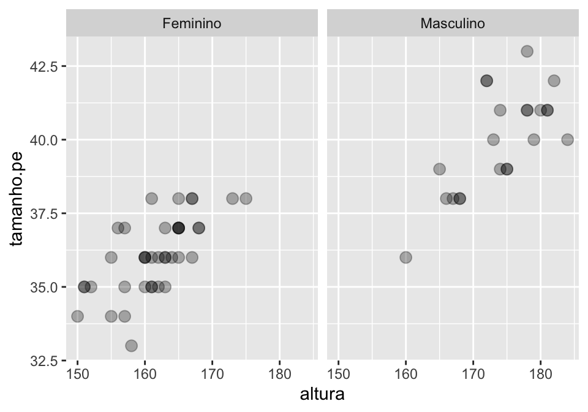

Introdução aos modelos lineares mistos para os estudos da linguagem
Apresentação: objetivo, público alvo e conteúdo
Para citar este material:
Godoy, M. C. (2019). Introdução aos modelos lineares mistos para os estudos da linguagem. PsyArXiv. https://doi.org/10.17605/OSF.IO/9T8UR
Este tutorial foi pensado com o objetivo de ensinar os conceitos básicos de Modelos Lineares Mistos e sua implementação em R no ambiente do RStudio. Apesar de haver muitos tutoriais bons sobre o tema em inglês, há pouco material desse tipo produzido em português para acadêmicos que têm pouca familiaridade com estatística. Por isso, o tutorial foi pensado para um público de pesquisadores em Ciências Humanas que têm pouco ou nenhum contato com linguagem de programação e pouco conhecimento de estatística. Para acompanhar o tutorial por conta própria, você deve conhecer os conceitos de média, mediana e distribuição normal. Além disso, fica mais fácil se você souber como funciona um histograma e um boxplot.
Se você tem conhecimento avançado em estatística ou está procurando uma discussão mais profunda sobre aspectos matemáticos de modelos lineares, esse tutorial talvez não seja para você. Se você é um pesquisador com um pouco de conhecimento sobre testes de hipóteses, mas que não domina o conceito básico de modelo linear, esse material é para você. O tutorial também é útil caso você conheça o básico de modelos lineares e queira aprender a utilizar R para fazer suas análises.
Modelos lineares são empregados para lidar com uma gama muito ampla de problemas de pesquisa. Os exemplos que serão dados nesses tutoriais refletem o tipo de pesquisa que eu realizo e conheço melhor: dados experimentais coletados em pesquisa sobre processamento de linguagem. Por isso, tenha sempre em mente que há uma série de questões que não abordarei (amostragem, detecção de outliers, desenhos experimentais etc.) que têm tratamentos específicos em áreas diferentes. Conheça bem a literatura da sua área antes de planejar uma análise de dados.
Ainda que os exemplos e dados sejam específicos de uma área, o conceito básico de modelo linear pode ser generalizado para outros campos.
Para acompanhar o tutorial, você deverá
instalar o
R: https://cran.r-project.org/instalar o RStudio: https://www.rstudio.com/products/rstudio/download/
baixar os arquivos do curso: https://github.com/mahayanag/tutoriaRmlm
A primeira seção é uma introdução ao R e ao RStudio e aos pacotes ggplot2 e dplyr. Se você já é usuário de R e conhece os pacotes, pode seguir para a segunda seção.
Se encontrar algum erro no material, entre em contato através do e-mail mahayanag -at- gmail ou por @mahagodoy no twitter.
1 Introdução ao R: manipulação e visualização de dados
O conteúdo desta seção inclui:
Reprodutibilidade na ciência
R, RStudio e seu ambiente de programação
Manipulação de dados usando o pacote dplyr
Gráficos utilizando o pacote ggplot2
1.1 Reprodutibilidade na ciência
Na Psicologia Cognitiva, há grande debate sobre a replicabilidade dos resultados de experimentos. Muitos trabalhos não têm conseguido replicar achados amplamente divulgados na academia e na mídia, o que tem feito com que a comunidade científica busque maneiras de melhorar nossas práticas experimentais1. No contexto do que hoje chamamos de Open Science, há uma necessidade crescente de promover a transparência dos procedimentos de criação de hipóteses, coleta e análise dos resultados experimentais.
Podemos deixar nossos estudos mais transparentes criando pré-registro2 dos nossos procedimentos de coleta e análise de dados. Podemos também compartilhar nosso conjunto de dados para permitir que outros pesquisadores reproduzam nossas análises de dados e/ou identifiquem padrões ou erros que não percebemos. Ter seu trabalho questionado por outro cientista não é algo ruim ou indesejado. Pelo contrário: significa que alguém leu o que você produziu e achou interessante o suficiente para identificar erros e propôr soluções que podem ampliar a compreensão do fenômeno estudado.
Hoje, há uma série de programas disponíveis para realização de análises estatísticas, como Excel, SPSS, STATA, Minitab etc. Se a seção de análise de dados de um artigo é bem escrita, ela deve ter informações que permitam a reprodução de seus resultados por outra pessoa que queira usar qualquer um desses programas. No entanto, as análises feitas a partir desses programas seguem um procedimento de point-and-click, o que torna mais difícil (e demorada) a reprodução das análises se algum detalhe deixou de ser descrito.
Nesse contexto, o uso de linguagens de programação apresenta a vantagem de permitir a reprodutibilidade das análises realizadas de modo mais transparente e mais fácil, sem custos maiores para quem está auditando a análise. Ao compartilharmos nosso código, fica fácil para nossos pares (pareceristas ou não) seguirem todos os passos da nossa análise e identificarem possíveis erros. O uso de linguagens de programação também permite que anotemos nossas decisões no próprio código. Isso permite que, anos depois, lembremos porque tomamos determinadas decisões durante nossa análise.
Embora haja outras linguagens de programação que podem ser usadas para análise de dados, esse tutorial elege o R. Para entender um pouco como essa linguagem funciona, precisamos conhecer também o RStudio, o ambiente de programação que usaremos ao longo do tutorial.
1.2 R, RStudio e seu Ambiente de Programação
Nesse tutorial, usamos o ambiente RStudio para escrever e rodar nossos códigos. Ele é uma interface que permite escrever o código e ver seus resultados em quatro paineis diferentes.
A cada novo grande trabalho de análise de dados (um mestrado, um doutorado, uma consultoria específica, um artigo etc.), é recomendado que você crie um novo projeto no R, uma espécie de pasta para reunir os arquivos de dados e códigos de análise desse projeto específico. Vamos aprender a fazer isso agora, criando um projeto para esse tutorial.
Abra o RStudio. Se tudo deu certo, você verá uma imagem parecida com a Figura 1.1.
Figura 1.1 Tela do RStudio
Vá em File > New Project e selecione New Directory para criar um diretório novo (cf. Figura 1.2).
Figura 1.2 Criando projeto em Novo diretório
Vamos criar um novo projeto no R, uma pasta onde colocaremos todos os arquivos necessários para o curso. Para isso, selecione Empty Project (cf. Figura 1.3).
Figura 1.3 Selecionando a opção Empty Project
Em seguida, escolha a pasta onde você vai guardar desse projeto e escolha um nome para ele (eu o chamei de TutoriaRMLM e guardei na minha pasta de cursos, como você vê na Figura 1.4).
Figura 1.4 Nomear novo diretório
Importe para essa nova pasta os materiais do tutorial que você baixou. São eles:
a pasta
dados, com os conjuntos de dados que utilizaremos;a pasta
scripts, que contem os códigos em arquivo.Rpara acompanhar cada seção do tutorial e a pastatarefas, com os gabaritos e respostas das tarefas práticas de cada seção;a pasta
arquivos_html, que apresenta cada uma das seções deste tutorial em formatohtml, para quem preferir acompanhar numa versão visualmente mais agradável.
Após importar todos os conjuntos de dados, você verá que as pastas dados, scripts e arquivos_html agora estão na aba Files no painel inferior direito do RStudio (cf. Figura 1.5). Se não estiverem lá, é porque você não colocou as pastas dentro do arquivo correto. Confira esse passo.
Figura 1.5 Tela inicial do novo projeto
Para abrir um script de extensão .R, que é um script de código executável em R, basta ir na pasta em que eles estão e abrir. Vamos abrir aqui o script da primeira seção do tutorial, chamado Aula1_MLM.R. Clique na pasta de scripts dentro do RStudio e abra-o.
Figura 1.6 Tela inicial do tutorial
Ao abrir o script, você viu que sua tela ficou dividia em quatro painéis. Tomando a Figura 1.6 como referência, temos:
Canto superior esquerdo: aqui temos o editor de texto. Vamos escrever nossos códigos nesta área. Quando fizer um script novo, você pode criá-lo ao apertar as teclas Ctrl+Shift+N. Para salvar, faça o mesmo que você faria para um documento de word (Crtl+Shift+S ou File>Save) e salve sempre dentro do projeto R em que você está trabalhando.
Canto inferior esquerdo: é o chamado prompt. Quando você roda um comando no editor de texto, é no prompt que os comandos são rodados e é aí que você vê os resultados se for algo numérico.
Canto superior direito: possui as abas Environment, History, Connections e Build. A mais usada é a aba Environment, onde podemos verificar quais variáveis estão presentes na memória do programa.
Canto inferior direito: possui diversas abas chamadas Files, Plots, Packages, Help e Viewer. É neste painel que veremos os gráficos plotados e os arquivos de ajuda.
Em um projeto R, a aba Files mostra os arquivos presentes na pasta. Para você voltar ao diretório anterior nessa aba, clique nos dois pontos ao lado da flecha verde que fica acima da lista de arquivos. Faça isso para voltar ao diretório raiz do projeto R que acabamos de criar.
Agora que você já está com o script da primeira seção aberto, podemos ver como o R funciona.
1.3 Como o R funciona
As primeiras linhas do seu código tratam da instalação de dois pacotes que são usados na primeira seção deste tutorial: dplyr e ggplot2. O R é uma linguagem de programação que executa funções que você escreve ou que estão previstas em um de seus inúmeros pacotes. Alguns pacotes servem para análise estatística, outros para manipulação ou viasualização de dados, alguns para produzir apresentações de slides, documentos em html ou pdf (o material deste tutorial foi todo feito com R!). Usamos a função install.packages() para instalar os dois pacotes que vamos usar nesta seção. Para executar o código, deixe o cursor (aquela barrinha vertical que fica piscando) na linha do comando que deseja executar e aperte CTRL+ENTER.
## baixar pacotes
install.packages("dplyr")
install.packages("ggplot2")Uma vez que você baixe um pacote do R, você não precisa mais instalá-lo (a menos que você formate o computador ou que saia uma versão atualizada do pacote). No entanto, toda vez que você iniciar uma seção nova do RStudio ou do R, você precisará carregar os pacotes através da função library(). Como sabemos que vamos usar esses pacotes mais adiante no tutorial, já vamos carregá-los aqui (para fins de organização, é sempre bom deixar no topo do seu código todos os pacotes que precisam ser carregados ao longo do trabalho).
## carregar pacotes
library(dplyr)
library(ggplot2)Quando organizamos nossos códigos, é importante comentá-los para que outras pessoas (e nós mesmos) entendamos o que está sendo feito ali. Para criar um comentário (ou seja, uma linha que não é entendida como um código executável), você precisa iniciar a linha com o símbolo #
## Tudo que for precedido pelo símbolo # em uma linha é classificado como comentário
## Comentários não são entendidos como código, e portanto o programa não tentará
## executá-losO código executável é inserido em um linha nova, e seu output mostrado em um dos dois paineis da parte inferior da tela. Abaixo vamos executar a equação 2+2. Como o resultado dela é um valor numérico, aparecerá na aba prompt.
## Essa linha é um comentário. A linha abaixo é um comando. Deixe o cursor (aquela
## barrinha vertical que fica piscando) na linha do comando que deseja
## executar e aperte CTRL+ENTER. Tente fazer isso com o comando da linha abaixo.
2+2
#> [1] 4Acima, fizemos uma operação matemática. Podemos fazer operações matemáticas a partir de funções. Por exemplo, abaixo usamos a função sqrt() para calcular a raiz quadrada de 4. Dizemos aqui que 4 é o argumento da função sqrt().
## calculando a raiz quadrada de 4
sqrt(4)
#> [1] 2A função c(x, y, z) cria um vetor com os elementos x, y e z. Os códigos abaixo criam um vetor chamado idade com a idade de 4 pessoas e um vetor chamado nome com os nomes de 4 pessoas (quando criar vetores não-numéricos, não se esqueça de colocar o valor entre aspas duplas, como "x").
Ao criar esses vetores, você verá que eles aparecem como um novo objeto na área Environment, à esquerda.
ATENÇÃO! Para criar um novo objeto
xque contenha o resultado de uma função, você pode usar<-, como emx <- f(y)ou=, como emx = f(y).
## criando um vetor com 4 valores
idade <- c(34, 35, 39, 42)
## criar um vetor com 4 nomes
nomes <- c("José", "Maria", "Ana", "Pedro")Algumas das funções mais comuns são mean(), median() e sd(), que retornam a média, mediana e desvio-padrão de um conjunto de dados. A seguir, extraímos a média, mediana e desvio padrão do conjunto de dados idade.
## extraindo a média de idade
mean(idade)
#> [1] 37.5
## extraindo a mediana de idade
median(idade)
#> [1] 37
## extraindo o desvio-padrão de idade
sd(idade)
#> [1] 3.696846Quando tentamos extrair as mesmas informações da coluna nome, recebemos uma mensagem de erro: argument is not numeric or logical: returning NA[1] NA. Isso ocorre porque o argumento dessas funções deve ter natureza numérica, e a mensagem de erro nos diz que esse não é o caso para o vetor nomes.
ATENÇÃO! Sempre que receber uma mensagem de erro ao rodar seu código, leia-a atentamente. Ela geralmente te informa o que há de errado com seu código. Se você não souber interpretá-la, jogue-a no google: alguém já teve sua dúvida.
## extraindo a média de nomes
mean(nomes)
#> Warning in mean.default(nomes): argument is not numeric or logical: returning NA
#> [1] NA
## extraindo a mediana de nomes
median(nomes)
#> Warning in mean.default(sort(x, partial = half + 0L:1L)[half + 0L:1L]): argument
#> is not numeric or logical: returning NA
#> [1] NA
## extraindo o desvio-padrão de nomes
sd(nomes)
#> Warning in var(if (is.vector(x) || is.factor(x)) x else as.double(x), na.rm =
#> na.rm): NAs introduced by coercion
#> [1] NAÉ possível salvar o resultado de qualquer função em um objeto de nome a sua escolha, e esses objetos são salvos na área Environment. Não use espaços, acentos e caracteres especiais no nome. Para não se confundir, não use maiúsculas: o R diferencia maísculas de minúsculas.
## criando um objeto com os resultados de uma função
media = mean(idade)
mediana = median(idade)
desvio.padrao = sd(idade)
## inspecionando os objetos criados
media
#> [1] 37.5
mediana
#> [1] 37
desvio.padrao
#> [1] 3.6968461.4 Manipulando conjuntos de dados
Até agora usamos o R como calculadora de contas simples, mas é claro que não é esse o uso que fazemos dele. Quando fazemos uma análise estatística, geralmente seguimos alguns passos:
- arrumamos os dados em um conjunto de dados, geralmente uma planilha;
- inspecionamos os dados para ver a distribuição de dados;
- excluímos alguns dados que julgamos relevante suprimir;
- fazemos uma análise estatística dos dados.
Vamos começar pelo primeiro passo, entendendo exatamente o que é uma planilha e como podemos importá-la para o R.
1.4.1 Dataframes: importando e conhecendo seu conjunto de dados
Anteriormente, criamos um vetor chamado idade e um chamado nome. Um vetor é uma lista de elementos, todos do mesmo tipo. Com o comando data.frame(), podemos unir esses dois vetores em um dataframe.
## criando um dataframe
df = data.frame(nomes, idade)Você pode clicar no objeto df que acabamos de criar e verá que ele é uma tabela composta pelos dois vetores que tínhamos anteriormente. Para aplicar uma função a um vetor específico de um dataframe, usamos o símbolo $. Abaixo, conseguimos extrair a média do vetor idade do dataframe chamado df.
## média de idade
median(df$idade)
#> [1] 37Geralmente, quando trabalhamos com conjuntos de dados, eles estão organizados em dataframes. Para aprendermos a importar dataframes para o R, manipulá-los e extrair suas informações, vamos usar o conjunto de dados linguistas.csv. Esse conjunto de dados tem informações sobre os linguistas de 4 universidades (UFRN, UFMG e Unicamp) e foi coletado em julho de 2019. Como ele tem extensão .csv, vamos importá-lo usando a função read.csv(). Perceba que o argumento da função é o “endereço” do arquivo: ele está dentro da pasta dados, e por isso o argumento da função é "dados/linguistas.csv".
## criando o conjunto de dados chamado linguistas.total com todos os dados da planilha
## linguistas.csv
linguistas.total = read.csv("dados/linguistas.csv")ATENÇÃO! Para importar conjuntos de dados com outra extensão, como
.xlsxou.txt, você precisará usar outras funções, mas de uma maneira semelhante a que acabamos de fazer. No nosso tutorial usaremos apenas arquivos.csv.
Agora que importamos o conjunto de dados, vamos ver o seu conteúdo. Você pode fazer isso usando uma das opções abaixo:
## Use a função head() para ver as linhas iniciais do conjunto de dados
head(linguistas.total)
#> genero idade altura altura.2 peso tamanho.pe instituicao dialeto
#> 1 Feminino 33 157 157 54 35 UFRN Bolacha
#> 2 Feminino 23 167 167 67 36 Unicamp Bolacha
#> 3 Feminino 49 158 158 50 33 UFMG Biscoito
#> 4 Feminino 23 164 164 54 36 UFMG Biscoito
#> 5 Masculino 28 166 166 75 38 Unicamp Bolacha
#> 6 Masculino 24 174 174 57 41 UFMG Biscoito
#> deslocamento status esporte
#> 1 veículo próprio ou carona professor Sim
#> 2 veículo próprio ou carona aluno Não
#> 3 veículo próprio ou carona aluno Sim
#> 4 outro aluno Sim
#> 5 à pé aluno Sim
#> 6 transporte público aluno Não
## Use a função str() para conhecer o conjunto de dados (informação sobre número de
## níveis, se o vetor é numérico ou não)
str(linguistas.total)
#> 'data.frame': 67 obs. of 11 variables:
#> $ genero : Factor w/ 2 levels "Feminino","Masculino": 1 1 1 1 2 2 1 2 1 1 ...
#> $ idade : int 33 23 49 23 28 24 41 35 53 33 ...
#> $ altura : int 157 167 158 164 166 174 160 172 163 167 ...
#> $ altura.2 : int 157 167 158 164 166 174 160 172 163 167 ...
#> $ peso : int 54 67 50 54 75 57 60 85 58 64 ...
#> $ tamanho.pe : int 35 36 33 36 38 41 36 42 36 38 ...
#> $ instituicao : Factor w/ 4 levels "Outra","UFMG",..: 3 4 2 2 4 2 4 4 2 3 ...
#> $ dialeto : Factor w/ 2 levels "Biscoito","Bolacha": 2 2 1 1 2 1 2 1 2 1 ...
#> $ deslocamento: Factor w/ 4 levels "à pé","outro",..: 4 4 4 2 1 3 4 1 3 3 ...
#> $ status : Factor w/ 2 levels "aluno","professor": 2 1 1 1 1 1 2 2 1 1 ...
#> $ esporte : Factor w/ 2 levels "Não","Sim": 2 1 2 2 2 1 1 2 2 2 ...
## Clique no conjunto na área Environment para abrir o conjunto de dados em forma de
## planilhaEsse conjunto de dados contém 11 variáveis:
genero: gênero do participante (apenas participantes de dois gêneros tiveram interesse em responder o questionário)
idade: idade do participante
altura: altura do participante em cm
altura.2: repetição da coluna altura
peso: peso do participante em kg
tamanho.pe: número do calçado do participante
instituicao: instituição onde o participante estuda/trabalha
dialeto: se o participante se refere a um pacote de passatempo como biscoito ou bolacha
deslocamento: como o participante se desloca até a universidade
status: posição do participante na universidade
esporte: se o participante pratica esportes
1.4.2 Dataframes: manipulando seu conjunto de dados
Imagine que queremos conhecer a população de linguistas da UFRN, Unicamp e UFMG. Primeiro precisamos garantir que haja apenas linguistas dessas instituições na nossa tabela. Além disso, queremos apenas participantes sejam alunos ou professores dessas instituições. A função unique() nos ajuda a ver os valores únicos do vetor de um dataframe.
## usando a função unique para ver todos os valores únicos da coluna *instituicao* no
## conjunto de dados
unique(linguistas.total$instituicao)
#> [1] UFRN Unicamp UFMG Outra
#> Levels: Outra UFMG UFRN Unicamp
## usando a função unique para ver todos os valores únicos da coluna *status* no
## conjunto de dados
unique(linguistas.total$status)
#> [1] professor aluno
#> Levels: aluno professorNosso primeiro problema será excluir a ocorrência de pessoas de outras instituições. Já que vamos limpar o conjunto de dados, também convém excluir a coluna altura.2, que é uma replicação da coluna altura.
Para fazer essas duas tarefas, usaremos o pacote dplyr, que nos ajuda a selecionar colunas e linhas a nossa escolha, criar tabelas para resumir os dados, mudar o formato do dataframe e várias outras funções. O dplyr possui funções bastante simples, mas que se usadas recursivamente, produzem resultados bastante variados.
As funções que vamos usar são:
select: seleciona variáveis baseada em seus nomes (colunas)filter: selecionas casos baseados em seus valores (linhas)summarise: resume múltiplos valores a apenas umgroup_by: agrupa dados para realizar operações
Vamos começar com a função select() para selecionar todas as colunas que usaremos, exceto a coluna altura.2. Rode o código abaixo e perceba que o resultado é a mesma planilha que tínhamos antes, mas sem a coluna altura.2.
## selecionando apenas as colunas de interesse para o projeto
linguistas.total%>%
select(genero, idade, altura, peso, tamanho.pe, instituicao, dialeto, deslocamento,
status, esporte)#> genero idade altura peso tamanho.pe instituicao dialeto
#> 1 Feminino 33 157 54 35 UFRN Bolacha
#> 2 Feminino 23 167 67 36 Unicamp Bolacha
#> 3 Feminino 49 158 50 33 UFMG Biscoito
#> 4 Feminino 23 164 54 36 UFMG Biscoito
#> 5 Masculino 28 166 75 38 Unicamp Bolacha
#> 6 Masculino 24 174 57 41 UFMG Biscoito
#> deslocamento status esporte
#> 1 veículo próprio ou carona professor Sim
#> 2 veículo próprio ou carona aluno Não
#> 3 veículo próprio ou carona aluno Sim
#> 4 outro aluno Sim
#> 5 à pé aluno Sim
#> 6 transporte público aluno NãoSe você prestar atenção ao código, verá que usando uma nova função, representada pelo símbolo %>%. Essa função se chama pipe e serve para levar o output de um comando para outro. Dito de outro modo, dizemos que o pipe pega o resultado de uma linha do código e usa como input para a função que está na linha subsequente. No exemplo acima, a primeira linha apenas seleciona o conjunto de dados linguistas.total, e a esse resultado aplica a função select().
Para entender o que o pipe faz, analisemos mais um exemplo. Dessa vez queremos filtrar apenas as informações de linguistas da UFRN, Unicamp e UFMG. Para isso, usamos o pipe com a função filter. A linha de filter do código abaixo pode ser lida como:
- filtre selecionando as observações que, na coluna
instituicao, tenham valor igual a “UFRN”, ou que na colunainstituicao, tenham valor igual a “UFMG”, ou que na colunainstituicao, tenham valor igual a “Unicamp”
Note que o símbolo |, no código abaixo, corresponde ao operador lógico ou.
# selecionando apenas participantes que indicaram que trabalham/estudam na Unicamp
## *OU* na UFMG *OU* na UFRN
## Marcador | indica "ou"
linguistas.total%>%
filter(instituicao == "UFRN" | instituicao == "UFMG" | instituicao == "Unicamp")#> genero idade altura altura.2 peso tamanho.pe instituicao dialeto
#> 1 Feminino 33 157 157 54 35 UFRN Bolacha
#> 2 Feminino 23 167 167 67 36 Unicamp Bolacha
#> 3 Feminino 49 158 158 50 33 UFMG Biscoito
#> 4 Feminino 23 164 164 54 36 UFMG Biscoito
#> 5 Masculino 28 166 166 75 38 Unicamp Bolacha
#> 6 Masculino 24 174 174 57 41 UFMG Biscoito
#> deslocamento status esporte
#> 1 veículo próprio ou carona professor Sim
#> 2 veículo próprio ou carona aluno Não
#> 3 veículo próprio ou carona aluno Sim
#> 4 outro aluno Sim
#> 5 à pé aluno Sim
#> 6 transporte público aluno NãoAo rodar o código acima, você verá que permaneceram na planilha de resultado apenas as observações de linguistas cujo valor da coluna instituicao era “UFMG”, “UFRN” e “Unicamp”.
Outra maneira de pedirmos a mesma seleção, obtendo o mesmo resultado, é informando que queremos a seleção de qualquer valor na coluna instituição que seja diferente de “Outra”. Rode o código abaixo e perceba que o resultado é o mesmo que obtivemos com o código anterior.
## Selecionando participantes de todas as universidades diferentes de Outra
linguistas.total%>%
filter(instituicao != "Outra")#> genero idade altura altura.2 peso tamanho.pe instituicao dialeto
#> 1 Feminino 33 157 157 54 35 UFRN Bolacha
#> 2 Feminino 23 167 167 67 36 Unicamp Bolacha
#> 3 Feminino 49 158 158 50 33 UFMG Biscoito
#> 4 Feminino 23 164 164 54 36 UFMG Biscoito
#> 5 Masculino 28 166 166 75 38 Unicamp Bolacha
#> 6 Masculino 24 174 174 57 41 UFMG Biscoito
#> deslocamento status esporte
#> 1 veículo próprio ou carona professor Sim
#> 2 veículo próprio ou carona aluno Não
#> 3 veículo próprio ou carona aluno Sim
#> 4 outro aluno Sim
#> 5 à pé aluno Sim
#> 6 transporte público aluno NãoATENÇÃO! Note que o sinal
==indica “igual a” na seleção por meio do pipe, enquando o sinal!=indica diferente de.
É possível combinar filter e select em uma sequência de comandos, sempre sabendo que o resultado de uma linha n, através do pipe, será o input de uma linha subsequente n+1. Vejamos isso no próximo código, em que também pedimos para excluir uma pessoa que indicou 78 como número de calçado, o que é obviamente um erro.
O código abaixo opera da seguinte maneira:
Linha 1: busca o conjunto de dados
linguistas.totalLinha 2: toma o resultado da Linha 1 seleciona as colunas de interesse (excluindo
altura.2)Linha 3: toma o resultado da Linha 2 e, em cima dele, aplica a função
filter()para filtrar apenas observações de participantes cujainstituicaotenha valor diferente de “Outra”;Linha 4: toma o resultado da Linha 3 e filtra observações que na coluna
tamanho.petenha valor menor que 50.
## Selecionando as colunas de interesse
## Selecionando participantes de instituições diferentes de Outra
## Selecionando participantes com tamanho de calçado menor que 50
linguistas.total%>%
select(genero, idade, altura, peso, tamanho.pe, instituicao, dialeto, deslocamento,
status, esporte)%>%
filter(instituicao != "Outra")%>%
filter(tamanho.pe < 50)#> genero idade altura peso tamanho.pe instituicao dialeto
#> 1 Feminino 33 157 54 35 UFRN Bolacha
#> 2 Feminino 23 167 67 36 Unicamp Bolacha
#> 3 Feminino 49 158 50 33 UFMG Biscoito
#> 4 Feminino 23 164 54 36 UFMG Biscoito
#> 5 Masculino 28 166 75 38 Unicamp Bolacha
#> 6 Masculino 24 174 57 41 UFMG Biscoito
#> deslocamento status esporte
#> 1 veículo próprio ou carona professor Sim
#> 2 veículo próprio ou carona aluno Não
#> 3 veículo próprio ou carona aluno Sim
#> 4 outro aluno Sim
#> 5 à pé aluno Sim
#> 6 transporte público aluno NãoAgora que selecionamos apenas as observações que queríamos, vamos salvar esse novo conjunto de dados com o nome de linguistas.edit. Na última linha do código, ainda usamos a função droplevels para que, nesse novo conjunto, sejam apagados os registros dos níveis que foram descartados a partir do filtros criados.
## Criando conjunto de dados
linguistas.edit = linguistas.total%>%
select(genero, idade, altura, peso, tamanho.pe, instituicao, dialeto, deslocamento,
status, esporte)%>%
filter(instituicao != "Outra")%>%
filter(tamanho.pe < 70)%>%
droplevels()Ao rodar o código, você verá o conjunto de dados linguistas.edit na sua área Environment.
É muito comum precisarmos limpar nosso conjunto de dados antes de analisá-los. Quando precisar fazer isso, evite criar planilhas diferentes para cada nova limpeza que precise fazer. O mais adequado é fazer as seleções e filtragens com o dplyr, comentando o porquê das escolhas. Se você preferir criar planilhas novas para cada filtragem, no futuro não saberá o que são todas aquelas planilhas.
Acredite em mim: é essa a minha sensação ao ver a Figura 1.7, que mostra a pasta com os dados de um experimento do meu mestrado.
Figura 1.7 Pasta desorganizada com arquivos incompreensíveis
1.4.2.1 Tarefa 1: manipulação do conjunto de dados
Olhe os códigos abaixo sem rodá-los;
Tente descobrir que código gerará uma mensagem de erro e o motivo dessa mensagem;
Rode os códigos para ver se você acertou.
## Código 1
linguistas.total%>%
select(genero, idade, altura, esporte, tamanho.pe, status)%>%
filter(instituicao != "UFMG")
## Código 2
linguistas.total%>%
select(genero, idade, altura, instituicao, esporte, status)%>%
filter(instituicao != "UFMG")1.4.3 Dataframes: extraindo informações descritivas de seus dados
Antes mesmo de fazermos nossa análise, é útil olharmos nossos dados para extrairmos algumas medidas descritivas: médias, medianas, desvio-padrão, contagem, porcentagem etc. Para aplicar funções estatísticas nas colunas do conjunto de dados e gerar tabelas com estatística descritiva, utilizamos a função summarise. O raciocício é o mesmo que usamos até aqui: o pipe recebe o resultado de uma linha e usa como input da linha seguinte.
## Criando tabela com as médias de altura e tamanho de pé a partir do conjunto
## linguistas.edit
linguistas.edit%>%
summarise(mean(altura),
mean(tamanho.pe))
#> mean(altura) mean(tamanho.pe)
#> 1 166.0328 37.47541
## Mesmo resultado, mas com etiquetas
linguistas.edit%>%
summarise(media_altura = mean(altura),
media_pe = mean(tamanho.pe))
#> media_altura media_pe
#> 1 166.0328 37.47541Acima, os dois códigos retornam os mesmos valores: a média de altura é de 166cm, e a média do tamanho do pé é 37.4. A única diferença é que no segundo código decidimos nomear esses valores que estamos extraindo com os nomes media_altura e media_pe. Desse jeito nossos dados ficam mais organizados.
A função summarise fica mais interessante se utilizada em conjunto com group_by. Essa última função agrupa as observações de acordo com os níveis de uma variável categórica. Veja que, com o código abaixo, primeiro pedimos para agrupar os dados pelos valores de instituição (ou seja, pelas níveis UFRN, UFMG e Unicamp), e depois pedimos para extrair as médias de altura e tamanho de pé (mean()), e também para calcular o número de ocorrências (n()) em cada um desses níveis.
## Criando tabela agrupando os participantes por instituição e para extração das médias
## de altura e tamanho de pé e do número de participantes
linguistas.edit%>%
group_by(instituicao)%>%
summarise(media_altura = mean(altura),
media_pe = mean(tamanho.pe),
quantidade = n())
#> # A tibble: 3 x 4
#> instituicao media_altura media_pe quantidade
#> <fct> <dbl> <dbl> <int>
#> 1 UFMG 166. 37.4 28
#> 2 UFRN 165. 37.4 17
#> 3 Unicamp 168. 37.8 16Para quem trabalha em áreas em que é preciso cruzar informação de diversos níveis para fazer contagem de ocorrências (ou extrair sua estatística descritiva), a função summary() é uma excelente maneira de extrair tabelas que resumam os dados, pois permite a seleção de combinação de múltiplas variáveis. Vamos extrair a quantidade participantes por instituição e gênero.
## Criando tabelas agrupando participantes por instituição e gênero para saber
## o n de cada grupo
linguistas.edit%>%
group_by(instituicao, genero)%>%
summarise(qtdd = n())
#> # A tibble: 6 x 3
#> # Groups: instituicao [3]
#> instituicao genero qtdd
#> <fct> <fct> <int>
#> 1 UFMG Feminino 20
#> 2 UFMG Masculino 8
#> 3 UFRN Feminino 11
#> 4 UFRN Masculino 6
#> 5 Unicamp Feminino 8
#> 6 Unicamp Masculino 81.4.3.1 Tarefa: descrição dos dados
É possível combinar as funções que vimos até agora em um mesmo código. Olhe os códigos abaixo, tente adivinhar qual seria seu output e crie uma descrição para eles .
## Código 1
linguistas.total%>%
filter(instituicao == "Unicamp")%>%
group_by(genero)%>%
summarize(media = mean(altura))
## Código 2
linguistas.total%>%
group_by(status, deslocamento)%>%
summarise(qtt = n())1.5 Explorando dados graficamente: ggplot2
A exploração gráfica de dados é crucial para entendermos sua distribuição e decidirmos que teste estatístico usar. Na próxima seção falaremos um pouco mais sobre distribuição de dados, mas aqui aprenderemos como visualizar graficamente nossos dados com um pacote chamado ggplot2.
Podemos dizer que gráficos nos ajudam a ver a relação entre uma variável resposta e uma variável explicativa. Se você quiser usar uma linguagem com menos relação de causalidade, pode chamar essas variáveis de variável resposta e variável independente (voltaremos a esses termos na seção 2).
Pense em como você tentaria demonstrar graficamente as respostas às seguintes perguntas:
- qual a relação entre altura e tamanho do pé?
- qual a relação entre gênero e altura?
- qual a relação entre a instituição e a escolha por bolacha/biscoito?Em todos esses exemplos, temos a relação entre uma variável X que (suspeitamos) explique uma variável Y. Esperamos que a altura explique o tamanho do pé (quanto mais alto, maior o pé), que gênero explique altura (gênero masculino prevê maiores alturas) e que a instituição explique preferências por usar as palavras bolacha ou biscoito (biscoito mais comum na UFRN, bolacha mais comum na Unicamp).
O pacote de visualização gráfica de dados ggplot2 tem esse nome porque se basea no livro Grammar of Graphics, de Leland Wilkinson. A ideia principal é criar gráficos como se eles fossem frases de uma língua, em que cada elemento do gráfico é uma palavra. Ou seja, trabalha-se com o conceito de gramática de gráficos (por isso o gg em ggplot2).
Uma outra maneira de entender a função ggplot e sua sintaxe é vê-la como a tela em branco de um quadro: começamos pintando os aspectos ao fundo, mais estruturais do quadro, e depois vamos adicionando camadas (agradeço à professora Livia Oushiro por ter me apresentado essa analogia!).
Os gráficos criados com esta ferramenta são, em geral, mais bonitos do que os gráficos tradicionais do R ou de outras ferramentas similares. Uma vez que você entenda sua sintaxe básica, é muito fácil editar o gráfico em termos de cores, contornos, variáveis etc.
1.5.1 ggplot: Sintaxe Básica
Para fazer um gráfico usando o ggplot2, primeiro precisamos que nossos dados estejam em um dataframe, pois não é possível trabalhar diretamente com dados de um vetor. Esse é o caso do conjunto de dados com que estamos trabalhando aqui.
DICA! Ao construir um dataframe, evite usar acentuação, caracteres especiais ou espaços nos nomes de suas variáveis. Isso evitará que você tenha problemas posteriormente com problemas de codificação.
A sintaxe básica do ggplot se dá através do comando abaixo, que define duas características importantes de um gráfico:
## sintaxe básica
ggplot(dados, aes(x = variável_explicativa, y = variável_resposta))- dados: o conjunto de dados a ser utilizado para trabalhar a visualização
- aes ou estética (aesthetics): as variáveis selecionadas para plotagem, agrupamento, coloração etc.
Todo tipo de gráfico que vamos construir parte desse código, então sua primeira tarefa é sempre pensar qual é sua variável explicativa e qual é sua variável resposta. Vejamos algumas opções de visualização para as questões colocadas anteriormente.
1.5.2 Gráficos de dispersão
Considere a seguinte pergunta:
- Será que pessoas mais altas têm pés maiores?
Ao colocarmos essa pergunta, estamos questionando se o tamanho de uma pessoa explica o tamanho de pé que ela tem. Temos, então, nossa variável explicativa (altura) e a variável resposta (tamanho do pé), e as duas são variáveis numéricas. Uma maneira de visualizar a relação entre duas variáveis de natureza numérica é através de um gráfico de dispersão, que indica cada observação com um ponto na coordenada em que os valores das duas variáveis se cruzam. Começamos preenchendo a sintaxe básica do ggplot com nossas variáveis.
## criando a estrutura básica do nosso gráfico
ggplot(linguistas.edit, aes(x = altura, y = tamanho.pe))Se você tentou rodar o código acima, recebeu uma mensagem de erro. O erro ocorreu porque é preciso informar a geometria do gráfico, ou seja, o modo como queremos dispôr nossa informação: colunas, linhas, pontos etc.
A geometria de um gráfico de dispersão (adequado para duas variáveis numéricas) é geom_point. Inserimos um sinal + ao fim da primeira linha para indicar que continuamos “pintando” nosso gráfico na linha seguinte.
## adicionando a camada de geometria, indicando geometria de pontos
ggplot(linguistas.edit, aes(x = altura, y = tamanho.pe))+
geom_point()Agora sim temos um gráfico de dispersão que mostra que, a medida que as pessoas ficam mais altas, o tamanho de seus pés aumenta.
Devemos lembrar que dados, estética e geometria são três camadas obrigatórias de todo gráfico. Se você deixar de fora um desses elementos, seu código retornará uma mensagem de erro.
Continuemos editando eesse gráfico para deixá-lo mais informatimo. É possível que haja sobreposição dos pontos, e portanto seria interessante mexer nas características dos pontos para adicionar transparência (alpha) e para modificar seu tamanho (size).
## modificando os elementos introduzidos pela camada geometria
## o valor de alpha vai de 0 (completamente transparente) a 1 (completamente opaco)
ggplot(linguistas.edit, aes(x = altura, y = tamanho.pe))+
geom_point(size = 3, alpha = 0.3) De fato, havia sobreposição. Há mais de uma pessoa com 160cm que calça 36.
Ainda é possível adicionar um novo agrupamento de dados a partir dos elementos da geometria. Suponha que eu queira identificar, no elementro de geometria, o gênero do indivíduos. Preciso fazer isso indicando a estética dessa geometria a partir da variável genero. Afinal, como vimos, a estética é responsável por informar as variáveis que vamos usar para definir cores, plotagem, agrupamento etc.
## agrupando dados por nova variável na camada de geometria por meio de cor
ggplot(linguistas.edit, aes(x = altura, y = tamanho.pe))+
geom_point(size = 3, alpha = 0.3, aes(color = genero))Se prefere não usar cores para isso, pode usar o formato dos elementos introduzidos na geometria.
## agrupando dados por nova variável na camada de geometria por meio de formato
ggplot(linguistas.edit, aes(x = altura, y = tamanho.pe))+
geom_point(size = 3, alpha = 0.3, aes(shape = genero))1.5.2.1 Tarefa: gráficos de dispersão
- Leia o código abaixo e tente adivinhar que tipo de gráfico ele construiria. Depois rode o código e veja se você acertou.
ggplot(linguistas.edit, aes(x = altura, y = peso))+
geom_point(size = 3, alpha = 0.6, colour = "red")- Tente escrever o código que produz o gráfico abaixo.
1.5.3 Boxplots
Até o momento, vimos como mostrar graficamente a relação entre duas variáveis numéricas. No entanto, a pergunta abaixo indica que queremos ver a relação entre uma variável explicativa categórica (gênero) e uma variável resposta numérica (altura).
- Será que o gênero de uma pessoa prevê sua altura?
Para ver como uma variável categórica influencia a distribuição das observações de uma variável numérica, podemos usar um tipo de gráfico chamado boxplot. O boxplot, portanto, é a geometria do nosso gráfico.
## Criando um boxplot
ggplot(linguistas.edit, aes(x = genero, y = altura))+
geom_boxplot()Aqui assumimos que você já conhece e sabe ler um boxplot, por isso não explicaremos o que ele indica. Se você não souber, procure informações em livros ou na internet3. Não vamos usar muito boxplot no tutorial, mas é bom que você o conheça.
Para editar a aparência do boxplot, podemos usar os comandos que vimos anteriormente, mas há algumas diferenças. Rodando o código abaixo, você verá que color, alpha e shape alteram a geometria do gráfico, que nesse caso é a forma do boxplot, mas não o seu preenchimento.
DICA! É possível escolher as cores que você quer para um gráfico selecionando seu código hexadecimal. Abaixo usamos o código
#8bd5c4, que corresponde a um tom de verde.
## personalizando o gráfico: note que é possível informar a cor por sua notação RGB
ggplot(linguistas.edit, aes(x = genero, y = altura))+
geom_boxplot(alpha = 0.4, size = 4, color = "#8bd5c4")O gráfico que acabamos de fazer é meio esquisito porque, na verdade, nós não queremos mudar a cor do boxplot, mas sim o seu preenchimento. Para fazermos isso, indicamos a cor que queremos com fill.
## personalizando o gráfico: note que é possível informar a cor por sua notação RGB
ggplot(linguistas.edit, aes(x = genero, y = altura))+
geom_boxplot(fill = "#8bd5c4")
E se quisermos ver as diferenças de gênero/altura por instituições? Nesse caso, é possível inserir informação sobre a variável instituicao na estética da geometria do gráfico. Note que, mais uma vez, indicamos fill, e não color, pois nesse caso trata-se do preenchimento da geometria.
## indicando preenchimento da geometria pela variável genero
ggplot(linguistas.edit, aes(x = genero, y = altura))+
geom_boxplot(aes(fill = instituicao))Outra maneira de fazer a distinção por gênero seria adicionar uma quarta camada no gráfico, chamada facet. Essa camada é útil para dividir informações do gráfico por uma variável e facilitar a comparação.
Note que o gráfico que fizemos acima permite a comparação de altura para homens ou mulheres entre as instituições, mas é difícil visualizar se as diferenças entre os dois gêneros varia de instituição para instituição.
Adicionando uma quarta camada, chamada facet, o que foi indicado nas linhas anteriores do gráfico se dividirá pela variável indicada para criar os grupos (ou facetas).
## Boxplot mostrando altura para cada gênero; um painel por instituição
ggplot(linguistas.edit, aes(x = genero, y = altura))+
geom_boxplot()+
facet_wrap(~ instituicao)É possível cruzar variáveis categóricas em facet para criar mais grupos. Abaixo, queremos ver a altura de homens e mulheres por instituição, também fazendo uma distinção entre aqueles que praticam esportes e que não praticam. Esse cruzamento de variáveis não é muito informativo, não temos nenhuma hipótese sobre porque a distribuição de altura mudaria em cada um desse grupos, mas mostramos essa possibilidade aqui apenas para vermos como facet funciona.
## criar gráficos nos 6 agrupamentos do cruzamento de instituição e esporte
## determinar número de colunas = 2 ('ncol = 2') nos painéis do facet para facilitar
## comparação (o default seria 3)
ggplot(linguistas.edit, aes(x = genero, y = altura))+
geom_boxplot()+
facet_wrap(~ instituicao + esporte, ncol = 2)
Também é possível usar facet para outros gráficos, como os gráficos de dispersão que fizemos anteriormente.
## Criando gráficos de dispersão com painéis diferentes para cada gênero
ggplot(linguistas.edit, aes(x = altura, y = tamanho.pe))+
geom_point(size = 3, alpha = 0.3)+
facet_wrap(~ genero)
Se é melhor mostrar variáveis por meio de diferentes cores em um mesmo gráfico ou se é melhor separar os gráficos por painéis diferentes usando facet é uma decisão que cabe a você!
ATENÇÃO! Quem desenha o gráfico é o
R, mas quem pensa é você! Pondere bem qual é a melhor maneira de apresentar suas informações graficamente e depois escreva o seu código.
1.5.3.1 Tarefa: boxplot
- Leia o código abaixo e tente adivinhar que tipo de gráfico ele construiria. Depois rode o código e veja se você acertou.
ggplot(linguistas.edit, aes(x = status, y = idade))+
geom_boxplot(aes(fill = instituicao))- Tente escrever o código que reproduz o gráfico abaixo (para a cor, use “lightblue”).
1.5.4 Gráfico de barras
Em algumas situações, nossa variável resposta também tem natureza categórica. É o que observamos na seguinte pergunta:
- Será que a instituição em que a pessoa estuda ou trabalha prevê se ela chamaria um pacote de Bono de biscoito ou bolacha?
No caso de duas variáveis categóricas (dialeto e instituição), usa-se um gráfico de barras para indicar a quantidade ou porcentagem de uma variável em função de outra. Os códigos base do R para fazer gráficos de barra são um pouco complicados, e mesmo o ggplot2 não tem uma sintaxe amigável com a geometria geom_bar. No entanto, uma maneira simples de fazer um gráfico de barras usando o ggplot2 é combinar o uso desse pacote com o dplyr.
A combinação entre esses dois pacotes ocorre quando processamos e agrupamos os dados que queremos usando o dplyr e usamos o seu resultado para criar um gráfico. Na pergunta que nos colocamos, queremos saber o número de pessoas que fala bolacha ou biscoito em cada instituição. Comecemos por um passo simples: criar uma tabela com o número de ocorrências de cada instituição. Já sabemos fazer isso.
## Tabela indicando frequência absoluta por instituição
linguistas.edit%>%
group_by(instituicao)%>%
summarise(quantidade = n())
#> # A tibble: 3 x 2
#> instituicao quantidade
#> <fct> <int>
#> 1 UFMG 28
#> 2 UFRN 17
#> 3 Unicamp 16Para que essa tabela vire um gráfico, basta que acrescentemos o código do ggplot indicando que queremos nossa variável explicativa no eixo x (a instituição) e o número de ocorrências no eixo y. No lugar onde costumamos informar o conjunto de dados, inserimos um ponto . para indicar que o input vem do código anterior.
## Gráfico indicando frequência absoluta por instituição
linguistas.edit%>%
group_by(instituicao)%>%
summarise(quantidade = n())%>%
ggplot(., aes(x = instituicao, y = quantidade))A essa altura você já deve ter percebido que o código acima não gerou um gráfico de barras porque esquecemos de indicar sua geometria. Fazemos isso agora com a geometria geom_col:
## Gráfico de barra (coluna) indicando frequência absoluta por instituição
linguistas.edit%>%
group_by(instituicao)%>%
summarise(quantidade = n())%>%
ggplot(., aes(x = instituicao, y = quantidade))+
geom_col()O gráfico está feito, mas não mostra a proporção de quem fala bolacha ou biscoito em cada instituição. Para isso, vamos ter que pedir que nossa tabela faça o agrupamento cruzando as informações de instituicao e dialeto dialeto. Fazemos isso alterando a segunda linha do código.
## Gráfico de barra (coluna) indicando frequência absoluta por instituição x dialeto
linguistas.edit%>%
group_by(instituicao, dialeto)%>%
summarise(quantidade = n())%>%
ggplot(., aes(x = instituicao, y = quantidade))+
geom_col()
Continuamos sem ver a distribuição entre os níveis da variável dialeto. Isso ocorre porque não indicamos, na estética, como queremos ver essa variável representada. Digamos que queremos vê-la no preenchimento das barras. Já sabemos que a função fill = faz isso. Inserimos essa informação na geometria do gráfico.
## Gráfico de barra (coluna) indicando frequência absoluta por
## instituição x dialeto com fill
linguistas.edit%>%
group_by(instituicao, dialeto)%>%
summarise(quantidade = n())%>%
ggplot(., aes(x = instituicao, y = quantidade, fill = dialeto))+
geom_col()Podemos ainda colocar as barras lado a lado (o default do ggplot é empilhar as barras).
## Gráfico de barra (coluna) indicando frequência absoluta por
## instituição x dialeto com fill
linguistas.edit%>%
group_by(instituicao, dialeto)%>%
summarise(quantidade = n())%>%
ggplot(., aes(x = instituicao, y = quantidade, fill = dialeto))+
geom_col(position = "dodge")Se quisermos um gráfico indicando o número de ocorrências, já temos o resultado. No entanto, às vezes queremos que a indicação venha em frequência relativa ou porcentagem para normalizar o fato de termos muito mais dados em uma condição (UFMG, no caso) do que em outras.
Para isso, usamos a função mutate() no dplyr para gerar um novo valor através da tabela que construímos antes. Nós vamos chamar esse valor de frequencia, e ele será igual o valor de quantidade dividido pela soma total de todos os valores de quantidade (esse é o cálculo que fazemos para extrair frequência relativa).
## Gráfico de barra (coluna) indicando frequência absoluta por
## instituição x dialeto com fill
linguistas.edit%>%
group_by(instituicao, dialeto)%>%
summarise(quantidade = n())%>%
mutate(frequencia = quantidade/sum(quantidade))
#> # A tibble: 6 x 4
#> # Groups: instituicao [3]
#> instituicao dialeto quantidade frequencia
#> <fct> <fct> <int> <dbl>
#> 1 UFMG Biscoito 20 0.714
#> 2 UFMG Bolacha 8 0.286
#> 3 UFRN Biscoito 14 0.824
#> 4 UFRN Bolacha 3 0.176
#> 5 Unicamp Biscoito 3 0.188
#> 6 Unicamp Bolacha 13 0.812A tabela nos indica que 71.4% dos linguistas da UFMG falam biscoito e 28.6% falam bolacha. Isso é muito mais informativo que apenas indicar o número de ocorrências.
Para fazer um gráfico de barras, é só continuar com o código inserindo a sintaxe do ggplot.
## Gráfico de barra (coluna) indicando frequência relativa por
## instituição x dialeto com fill
linguistas.edit%>%
group_by(instituicao, dialeto)%>%
summarise(quantidade = n())%>%
mutate(frequencia = quantidade/sum(quantidade))%>%
ggplot(., aes(x = instituicao, y = frequencia, fill = dialeto))+
geom_col(position = "dodge")Usando a frequência relativa, percebemos que não há muita diferença entre UFMG e UFRN. Se quisermos que nosso eixo y indique a porcentagem dos dados, é só acrescentar essa informação no gráfico.
## Gráfico de barra (coluna) indicando porcentagem por
## instituição x dialeto com fill
linguistas.edit%>%
group_by(instituicao, dialeto)%>%
summarise(quantidade = n())%>%
mutate(frequencia = quantidade/sum(quantidade))%>%
ggplot(., aes(x = instituicao, y = frequencia, fill = dialeto))+
geom_col(position = "dodge")+
scale_y_continuous(labels=scales::percent)Se parece muita coisa para lembrar, não se preocupe! Uma vez que você saiba o que quer fazer e conheça o básico de R, saberá buscar exemplos de códigos na internet (ou mesmo neste tutorial) e ajustar o que precisa.
DICA! Pense que aprender uma linguagem de programação é como aprender uma língua estrangeira: quanto mais você usar, mais fácil fica de lembrar as palavras e a sintaxe da sentença que você quer construir. No entanto, quem está no nível básico também consegue fazer muita coisa consultado livros e dicionários. Não tenha receio de consultar códigos prontos enquanto não consegue escrevê-los do zero!
1.5.4.1 Tarefa: gráfico de barras
- Leia o código abaixo e tente adivinhar que tipo de gráfico ele construiria. Depois rode o código e veja se você acertou.
linguistas.edit%>%
group_by(instituicao, status, deslocamento)%>%
summarise(quantidade = n())%>%
mutate(frequencia = quantidade/sum(quantidade))%>%
ggplot(., aes(x = status, y = frequencia, fill = deslocamento))+
geom_col()+
scale_y_continuous(labels=scales::percent)+
facet_wrap(~instituicao)DICA! Tenha atenção quando for usar
facet_wrapegroup_bypara um gráfico. Quando for construir a tabela nogroup_by, informe primeiro a variável que vai nofacet_wrap, depois a que vai no eixo x e, por fim, a que vai no preenchimento de cores das barras.
- Leia o código abaixo e tente descobrir porque ele não retorna o que descreve sua descrição. Arrume o código.
## Gráfico de barra mostrando a proporção (em %) de pessoas que faz atividade física
## em cada uma das instituições
linguistas.edit%>%
group_by(instituicao, esporte)%>%
summarise(quantidade = n())%>%
mutate(frequencia = quantidade/sum(quantidade))%>%
ggplot(., aes(x = instituicao, y = frequencia))+
geom_col()1.5.5 Não pare por aqui!
Vimos apenas algumas das possibilidades de customização de gráficos com o ggplot. Você pode alterar as cores, temas e fontes do gráfico, colocar legendas, barras de erros e outras informações que desejar. A internet e a grande comunidade de R Users são suas amigas nessa hora!
1.6 Prática
O conjunto de dados da planilha pronome.csv é um subconjunto dos dados do experimento descrito em Godoy et al. (2018) (voltaremos a esse estudo na Seção 5).
Uma das hipóteses desse estudo era a de que a interpretação do pronome ambíguo das sentenças (1) e (2) seria influenciada pelo aspecto perfectivo (“passou”) ou imperfectivo (“estava passando”) do verbo da sentença anterior. A probabilidade de escolher o referente no papel temático de alvo (e.g. Rubens) seria maior em (1) que em (2).
- Augusto passou a bola para Rubens. Ele…
- Augusto estava passando a bola para Rubens. Ele…
Para testar essa hipótese, os autores criaram sentenças semelhantes a essas e pediram para os participantes criarem continuações. Depois, analisaram as respostas para identificar se a interpretação do pronome retomava a fonte (como Augusto) ou o alvo (Rubens) e anotaram essas respostas numa planilha que você pode acessar importando o conjunto de dados pronomes.csv.
O conjunto de dados contém 6 colunas:
participante, com identificação dos participantes da pesquisa;
item, com identificação de 16 histórias utilizadas como itens experimentais;
frase, com as frases utilizadas no experimento;
aspecto, com identificação das condições de aspecto verbal: perfectivo (perfective) e imperfectivo (imperfective);
classe, uma condição experimental que entenderemos na Seção 5;
interpretacao: interpretação do pronome tal qual anotado pelos pesquisadores, e que indica interpretação de fonte (fonte), alvo (alvo) ou ambígua (ambiguo).
Para ver se a hipótese dos autores foi corroborada pelos dados, você deverá:
- Importar a planilha;
- Inspecionar o conjunto de dados;
- Filtrar os dados da coluna
interpretacaopara selecionar apenas os dados com os valoresfonteoualvo; - Extrair a frequência absoluta e relativa de fonte/alvo por aspecto;
- Fazer um gráfico indicando a porcentagem de fonte ou alvo por aspecto.
2 Modelos Lineares
Modelos lineares mistos são, por definição, modelos lineares. Por isso, é importante entendermos primeiro o que é um modelo linear. Nesta seção, vamos apresentar alguns conceitos básicos.
Enquanto você acompanha a parte introdutória do tutorial, baixe os novos pacotes que serão usados para as atividades e carregue os pacotes que serão usados:
## instalar pacote novo para a seção
install.packages("yarrr")
## carregar pacotes
library(ggplot2)
library(dplyr)2.1 Modelos lineares: sintaxe em R e conceitos básicos
Para demonstrar o que é um modelo linear, seguiremos uma adaptação do tutorial de Bodo Winter (2013), usando o mesmo conjunto de dados e mudando um pouco a ordem de apresentação dos argumentos.
Começaremos criando o mesmo conjunto de dados que Winter cria para responder a seguinte pergunta: a idade de uma pessoa prevê o seu pitch?
## Criar conjunto de dados de Winter (2013)
## criando vetor idade
idade = c(14,23,35,48,52,67)
##criando vetor pitch
pitch = c(252,244,240,233,212,204)
## combinando os dois vetores em um dataframe
my.df = data.frame(idade,pitch)
## vendo o dataframe
head(my.df)
#> idade pitch
#> 1 14 252
#> 2 23 244
#> 3 35 240
#> 4 48 233
#> 5 52 212
#> 6 67 204Ao olharmos a o conjunto de dados que criamos, percebemos que as pessoas mais novas parecem ter um pitch mais alto. Na verdade, podemos representar cada indivíduo em um gráfico como na Figura 2.1, e isso nos mostrará que (a) parece haver uma relação entre idade e pitch; (b) essa relação pode ser modelada por uma linha reta.
Figure 2.1: Relação entre pitch e idade
Ao ver o gráfico acima, é possível nos perguntarmos se pitch muda em função de idade.
Um modelo linear é uma maneira matemática de avaliar se pitch e idade se relacionam de alguma maneira. Para isso, vamos expressar em uma fórmula simples a relação entre as duas variáveis que estamos estudando.
pitch ~ idade
A fórmula acima pode ser lida como pitch em função de idade. Você já deve ter visto esses termos sendo chamados de variável dependente (o pitch, aquilo que medimos) e variável independente (a idade, aquilo que acreditamos que terá um efeito ou que se correlaciona de alguma maneira com a variável dependente). Também é possível chamar essas duas variáveis de variável resposta e variável preditora, respectivamente, em uma relação mais causal. Aqui, chamaremos a variável independente de efeito fixo, por motivos que ficarão claros mais adiante.
É possível que haja uma relação entre pitch e idade, mas as coisas não são tão determinísticas assim. O pitch pode ser influenciado por outros aspectos, e a mesma pessoa pode ver seu pitch mudar a depender de fatores como estado emocional, disposição, doenças que afetem as vias respiratórias etc. Nossa fórmula é então reescrita com a adição de um termo que capte esses fatores aleatórios. Na formula abaixo, \(\epsilon\) representa todo o ruído que afeta pitch e que não foi controlado no experimento.
pitch ~ idade + \(\epsilon\)
Para criar um modelo linear no R, usamos a função lm() e escrevemos a equação desejada como seu argumento.
Abaixo, criamos o objeto modelo.idade, que corresponde a um modelo linear que toma pitch em função de idade a partir do conjunto de dados my.df.
## Criando um modelo linear de pitch em função de idade
modelo.idade = lm(pitch ~ idade, my.df)Podemos usar a função names() para ver os dados contidos dentro de modelo.idade. Na sequência, vemos o conteúdo de fitted.values e residuals
## ver os nomes dos objetos contidos no objeto modelo.idade
names(modelo.idade)
#> [1] "coefficients" "residuals" "effects" "rank"
#> [5] "fitted.values" "assign" "qr" "df.residual"
#> [9] "xlevels" "call" "terms" "model"
## ver o que há em fitted.values
modelo.idade$fitted.values
#> 1 2 3 4 5 6
#> 254.3383 246.1495 235.2310 223.4027 219.7633 206.1152
## ver o que há em residuals
modelo.idade$residuals
#> 1 2 3 4 5 6
#> -2.338293 -2.149468 4.768965 9.597267 -7.763256 -2.115215Os valores de fitted.values, ou valores ajustados, são os valores previstos pela reta, e os valores residuais são a diferença entre o valor ajustado e o valor observado. Na Figura 2.2, os resíduos são representados pela linha que liga valor observado (pontos pretos) e valor ajustado (pontos brancos).
Figure 2.2: Resíduos e valores ajustados na relação entre pitch e idade
Para saber o resultado do modelo linear, usamos a função summary().
## buscando o sumário dos valores do modelo linear
summary(modelo.idade)
#>
#> Call:
#> lm(formula = pitch ~ idade, data = my.df)
#>
#> Residuals:
#> 1 2 3 4 5 6
#> -2.338 -2.149 4.769 9.597 -7.763 -2.115
#>
#> Coefficients:
#> Estimate Std. Error t value Pr(>|t|)
#> (Intercept) 267.0765 6.8522 38.98 2.59e-06 ***
#> idade -0.9099 0.1569 -5.80 0.00439 **
#> ---
#> Signif. codes: 0 '***' 0.001 '**' 0.01 '*' 0.05 '.' 0.1 ' ' 1
#>
#> Residual standard error: 6.886 on 4 degrees of freedom
#> Multiple R-squared: 0.8937, Adjusted R-squared: 0.8672
#> F-statistic: 33.64 on 1 and 4 DF, p-value: 0.004395De início, podemos reconhecer duas informações que já sabemos sobre o modelo:
call: a fórmula usada no modeloresidual: os resíduos do modelo
Além disso, há uma seção chamada coefficients, mas deixaremos isso para depois.
Dando sequência, vemos no rodapé uma série de informações do modelo como um todo. O \(R^2\) (ou R ao quadrado) é uma medida que vai de 0 a 1 indica a variância explicada pelo modelo. O valor de 0.89 indica que nosso modelo é capaz de explicar 89% do que está acontecendo no nosso conjunto de dados. Como temos apenas um efeito fixo em modelo.idade, podemos entender o \(R^2\) como indicativo da variância explicada pela idade.
Como Winter (2013) aponta, o que é um valor alto de \(R^2\) varia de área para área e depende do problema estudado. Em contextos em que o efeito estudado é muito complexo, é mais comum lidarmos com valores mais baixos.
O valor ajustado de R (Adjusted R-squared) é um valor relacionado ao \(R^2\), mas que leva em conta o número de efeitos fixos inseridos no modelo. Porque só há um efeito fixo em modelo.idade, os valores são bem similares, mas o valor ajustado seria menor se o modelo tivesse mais efeitos fixos.
Mais adiante, você encontra o p-valor associado ao modelo. Para explicá-lo, recorremos ao que diz Winter (2013) em seu tutorial.
“Uma maneira de colocar seria dizer que, assumindo que seu modelo não esteja fazendo nada, a probabilidade dos seus dados é muito baixa (porque o p-valor é pequeno nesse caso). Tecnicamente, o p-vaor é uma probabilidade condicional, é a probabilidade sob a condição de que a hipótese nula seja verdadeira.” (Winter, B. 2013, p. 5)
No caso que estamos avaliando aqui, a hipótese nula é “idade não tem qualquer efeito em pitch”, e uma hipótese alternativa seria “idade tem efeito em pitch”.
“[O] modelo linear mostra que se essa hipótese [nula] é verdadeira, então nossos dados são muito improváveis. Isso é imterpretado como indicativo de que a hipótese alternativa (…) é mais provável e que, portanto, nosso resultado é estatisticamente significativo.” (Winter, B. 2013, p. 5)
Não podemos confundir o p-valor do modelo completo com o p-valor dos coeficientes dos efeitos fixos (que costumam ser mais interessantes quando fazemos uma análise com modelos mistos, mas falaremos sobre isso em outro momento).
O valor da estatística-F, bem como seus graus de liberdade, são dados na sequência (não vamos cobrir ANOVA e estatística-F nesse curso). Pare reportar seus resultados, você precisa informar esses dados e escrever algo como…
Ajustamos um modelo linear com pitch como variável dependente e idade como efeito fixo. Esse modelo foi estatisticamente significativo (F(1,4) = 33.64, p <0.01).
2.2 Os coeficientes do modelo linear
Quando ajustamos um modelo linear, geralmente estamos mais interessados nos coeficientes dos seus efeitos fixos. Abaixo buscamos novamente o sumário dos resultados para análisar seus coeficientes. Achamos essa informação logo abaixo dos resíduos.
## buscando o sumário dos valores do modelo linear
summary(modelo.idade)
#>
#> Call:
#> lm(formula = pitch ~ idade, data = my.df)
#>
#> Residuals:
#> 1 2 3 4 5 6
#> -2.338 -2.149 4.769 9.597 -7.763 -2.115
#>
#> Coefficients:
#> Estimate Std. Error t value Pr(>|t|)
#> (Intercept) 267.0765 6.8522 38.98 2.59e-06 ***
#> idade -0.9099 0.1569 -5.80 0.00439 **
#> ---
#> Signif. codes: 0 '***' 0.001 '**' 0.01 '*' 0.05 '.' 0.1 ' ' 1
#>
#> Residual standard error: 6.886 on 4 degrees of freedom
#> Multiple R-squared: 0.8937, Adjusted R-squared: 0.8672
#> F-statistic: 33.64 on 1 and 4 DF, p-value: 0.004395Perceba que são atribuídos coeficientes para duas linhas diferentes: intercept e idade. Comecemos pelo primeiro.
O valor de intercept em um modelo linear, será o valor em que a reta ajustada pelo modelo intercepta o eixo y quando o valor de x (o efeito fixo) é igual a zero. No caso do modelo ajustado, nosso efeito fixo é idade. O valor estimado para o intercept - ou intercepto, como iremos chamá-lo daqui em diante - é de 267.07, o que indica o pitch estimado de uma pessoa aos 0 anos de idade. Dito de outro modo, se voltarmos na Figura 2.1 e continuarmos traçando a reta, ela cruzaria o eixo y no valor de 267.07.
Claro que esse intercepto não faz muito sentido, pois não há como uma pessoa não nascida (i.e., com 0 anos) ter pitch. Cabe a você interpretar quão informativo é o intercepto para o modelo ajustado.
Em todo caso, entender o que é o intercepto nos ajuda a compreender o que significa o valor atribuído ao efeito fixo idade. Vemos que é um valor negativo, de -0.9099. Isso indica que para cada unidade que você “anda” à direita no eixo x, o valor e y recebe um decréscimo de 0.9099: dito de outro modo, para cada unidade de x, a reta tem um declive (ou slope, em inglês) de -0.9099. Lembremos que nosso eixo x indica idade, e o eixo y indica o valor de pitch em hertz. Para usar o termo em inglês, o slope estimado de idade indica que, para cada ano de vida, o modelo prevê uma queda em hertz de 0.9099. Assim, o modelo prevê que uma criança de um ano teria um pitch de 267.07 (o valor do intercepto) menos 0.9099. Podemos escrever da seguinte maneira
## pessoa com um ano
267.0765 - 0.9099
#> [1] 266.1666
## pessoa com dois anos
267.0765 - (0.9099*2)
#> [1] 265.2567
## pessoa com três anos
267.0765 - (0.9099*3)
#> [1] 264.3468
## pessoa com quatorze anos
267.0765 - (0.9099*14)
#> [1] 254.3379
## buscando os valores ajustados no modelo (primeiro dado corresponde a indivíduo
## de 14 anos)
modelo.idade$fitted
#> 1 2 3 4 5 6
#> 254.3383 246.1495 235.2310 223.4027 219.7633 206.1152Perceba que o valor de pitch que calculamos para uma pessoa de 14 anos é justamente o valor previsto quando pedimos para ver os valores ajustados!
Agora estamos um pouco mais equipados para entender o que um modelo linar faz. Primeiro, convém mencionar que o valor estimado dos coeficientes é chamdo de beta, frequentemente representado pela letra grega \(\beta\). O coeficiente do intercepto é representado por \(\beta_{0}\).
Um modelo linear ajusta uma reta a um plano cartesiano, e os valores previstos por essa reta são previstos pela equação abaixo:
Para regressão com uma variável
\(y=\beta_{0}+\beta_{1}x_{1}\)
Para regressão com \(n\) variáveis
\(y=\beta_{0}+\beta_{1}x_{1}+\beta_{2}x_{2}+...\beta_{n}x_{n}\)
Voltaremos a essa equação em outro momento.
Ao analisar os coeficientes do modelo, vemos que o p-valor associado a idade é igual ao p-valor do modelo como um todo: 0.0043. Isso ocorre porque nosso modelo tem apenas um efeito fixo, e portanto a significância do modelo será equivalente a quão significante é esse efeito fixo. Se nosso modelo tivesse mais um efeito fixo (sexo, por exemplo), haveria um p-valor para o modelo (que indicaria a significância do modelo como um todo) com valor diferente do p-valor de idade (que indica a significância da variável idade em definir os valores de y, isto é, de pitch).
O p-valor de 0.0043 nos indica, portanto, que é muito pouco provável a hipótese nula de que idade não tem um efeito sobre o pitch de uma pessoa.
2.3 Modelos lineares com efeitos fixos categóricos
Até agora, vimos apenas casos em que o efeito fixo é uma variável numérica, mas frequentemente lidamos com variáveis categóricas como gênero, profissão, grau de escolaridade, dialeto etc. A vantagem de trabalhar com modelos lineares é que é possível analisar esses dados da mesma maneira que já vimos anteriormente.
Consideremos um novo conjunto de dados, também criado por Winter (2013). Dessa vez, queremos saber se o pitch de uma pessoa muda em função de seu sexo.
## Criando dataframe para testar se pitch ~ sexo
## vetor com dados de pitch
pitch = c(233,204,242,130,112,142)
## vetor com dados de sexo
sexo = c(rep("feminino",3),rep("masculino",3))
## combinando os dois vetores em um dataframe
my.df2 = data.frame(sexo,pitch)
## vendo o dataframe
head(my.df2)
#> sexo pitch
#> 1 feminino 233
#> 2 feminino 204
#> 3 feminino 242
#> 4 masculino 130
#> 5 masculino 112
#> 6 masculino 142Como antes, expressamos a hipótese a ser testada no modelo com a mesma equação:
pitch ~ sexo + \(\epsilon\)
A implementação no R é exatamente a mesma, mas você pode ver que a leitura dos coeficientes vai ser um pouco diferente.
## ajustar o modelo
modelo.sexo = lm(pitch ~ sexo, my.df2)
## resultados
summary(modelo.sexo)
#>
#> Call:
#> lm(formula = pitch ~ sexo, data = my.df2)
#>
#> Residuals:
#> 1 2 3 4 5 6
#> 6.667 -22.333 15.667 2.000 -16.000 14.000
#>
#> Coefficients:
#> Estimate Std. Error t value Pr(>|t|)
#> (Intercept) 226.33 10.18 22.224 2.43e-05 ***
#> sexomasculino -98.33 14.40 -6.827 0.00241 **
#> ---
#> Signif. codes: 0 '***' 0.001 '**' 0.01 '*' 0.05 '.' 0.1 ' ' 1
#>
#> Residual standard error: 17.64 on 4 degrees of freedom
#> Multiple R-squared: 0.921, Adjusted R-squared: 0.9012
#> F-statistic: 46.61 on 1 and 4 DF, p-value: 0.002407Já sabemos interpretar os valores de \(R^2\) e R ajustado, bem como o p-valor do modelo, que é de 0.002. Não há nada de diferente aqui. Vemos, inclusive, que o p-valor do modelo é igual ao p-valor do coeficiente do efeito fixo, já que, por ser um modelo de apenas um efeito fixo, a significância do modelo e do efeito fixo é a mesma.
No entanto, a linha do efeito fixo na tabela de coeficientes diz apenas sexomasculino. Para onde foi o feminino? O que isso quer dizer? Para responder a essas perguntas, vamos usar o dplyr para extrair as médias de pitch para os indivíduos do sexo masculino e feminino.
## médias de pitch por sexo
my.df2%>%
group_by(sexo)%>%
summarize(mean(pitch))
#> # A tibble: 2 x 2
#> sexo `mean(pitch)`
#> <fct> <dbl>
#> 1 feminino 226.
#> 2 masculino 128Se você comparar as médias com os coeficientes, perceberá que o intercepto corresponde à média de pitch dos participantes do sexo feminino, o que significa que o modelo tomou o níve feminino como nível de referência. É por isso que esse nível não aparece na tabela de coeficientes: ele está “disfarçado” como o intercepto do modelo.
E a linha correspondente a sexomasculino? Vemos que ela tem o valor de \(\beta\) igual a -98.33, que em nada se parece com a média dos indivíduos do sexo masculino, que foi de 128hz. No entanto, vemos que esse é exatamente a diferença entre a média masculina e a feminina:
média feminina - \(\beta\) = média masculina
226.33 - 98.33 = 128
Para entender melhor o que está acontecendo aqui, vamos dar uma olhada na Figura 2.3, que mostra a distribuição dos dados. Lembremos também que um modelo linear tenta ajustar retas que expliquem essa distribuição.
Figure 2.3: Pitch em função de sexo
Vimos que o valor médio do nível feminino foi tomado como intercepto do modelo. Por esse motivo, indicamos no gráfico que o nível feminino tem o valor de x igual a zero. Vemos também, na linha tracejada vermelha, que esse valor é de 226.33.
Para irmos ao valor médio de masculino, que está em x = 1, nossa reta tem que descer 98.33hz: o seu slope é de -98.33. Vemos que, quando x = 1, o valor médio de pitch é 128hz, representado pela linha tracejada azul.
Isso não é diferente do que vimos antes: o modelo assume um intercepto para y quando x = 0, e então indica o slope que mostra a diferença entre esse intercepto e as outra unidade da variável em x.
Você pode se perguntar o porquê de o feminino - e não o masculino - ter sido tomado como nível de referência. Isso ocorre porque o R organiza os níveis de uma variável categórica em ordem alfabética. Você pode escolher o seu nível de referência (que será o seu intercepto) com a função relevel().
## sobrescrever a coluna sexo com um novo nível de referência
my.df2$sexo = relevel(my.df2$sexo, ref = "masculino")
## ajustar o modelo
modelo.sexo2 = lm(pitch ~ sexo, my.df2)
## resultados
summary(modelo.sexo2)
#>
#> Call:
#> lm(formula = pitch ~ sexo, data = my.df2)
#>
#> Residuals:
#> 1 2 3 4 5 6
#> 6.667 -22.333 15.667 2.000 -16.000 14.000
#>
#> Coefficients:
#> Estimate Std. Error t value Pr(>|t|)
#> (Intercept) 128.00 10.18 12.568 0.000231 ***
#> sexofeminino 98.33 14.40 6.827 0.002407 **
#> ---
#> Signif. codes: 0 '***' 0.001 '**' 0.01 '*' 0.05 '.' 0.1 ' ' 1
#>
#> Residual standard error: 17.64 on 4 degrees of freedom
#> Multiple R-squared: 0.921, Adjusted R-squared: 0.9012
#> F-statistic: 46.61 on 1 and 4 DF, p-value: 0.002407Acima, usamos essa função para informar que desejamos que masculino seja o nível de referência. Você verá que o resultado no modelo permanecerá quase inalterado, exceto por dois detalhes: o nome da linha do coeficiente de efeito fixo - que agora passar a ser sexofeminino e o sinal do valor do coeficiente estimado, que será positivo. Isso ocorre porque agora a nossa reta precisa subir 98hz, e não descer, como vemos na Figura 2.4.
Figure 2.4: Pitch em função de sexo, com masculino como intercept
Voltemos ao nosso modelo original, em que masculino = 1 e feminino = 0 e vamos olhar novamente a equação do modelo linear.
Relembrando cálculo de y na regressão com uma variável
\(y=\beta_{0}+\beta_{1}x_{1}\)
Se quisermos calcular o valor de y para masculino (o nosso \(x_1\)), podemos substituir essa equação pelo valores obtidos em nosso modelo linear:
\(\beta_{0}\) = 226.33
\(\beta_{1}\) = -98.33
\(x_1\) = 1
y = 226.33 + (-98.33*1) = 128
Desse modo, percebemos que aqui também a distribuição de dados está sendo modelada a partir da equação de uma regressão linear.
Entender que o modelo está lendo o o nível de referência como igual a 0 e o nível ao qual está fazendo a comparação como igual a 1 será útil quando discutirmos contrastes na seção 4.
2.4 Modelos lineares e outros testes estatísticos
Se você conhece um pouco de estatística, deve estar pensando que os problemas que vimos até aqui poderiam ser resolvidos por um teste de correlação (no caso de picth ~ idade) e por um teste-t ou ANOVA (no caso de pitch ~ sexo).
De fato, isso é verdade, e se você fizer essa análise verá que os valores do p-valor para o modelo serão os mesmos. Isso ocorre porque todos esses testes são modelos lineares.
A vantagem do modelo linear e do uso de retas para mostrar diferenças entre dois níveis de uma variável categórica ficará mais clara ao discutirmos as vantagens do modelo linear misto na próxima seção.
2.5 Modelos lineares com mais de uma variável
Até agora, vimos modelos bastante simples, mas podemos torná-los mais complexo. O pitch de uma pessoa é modelado tanto por seu sexo quanto por sua idade. É possível colocar os dois efeitos no modelo. Adicionalmente, podemos também colocar a língua que ela fala, para testar se esse fator influencia o pitch.
pitch ~ sexo + idade + língua
Nesse caso, a análise de resultados será bastante similar. A diferença principal será o p-valor do modelo, que será diferente do p-valor daqueles apresentados para cada um dos efeitos fixos.
Para ilustrar, consideremos o conjunto de dados diamonds, do pacote yarrr. Se você já baixou e carregou esse pacote, esse conjunto de dados já está disponível para inspeção.
## conhecendo o conjunto de dados
head(diamonds)
#> weight clarity color value
#> 1 9.35 0.88 4 182.5
#> 2 11.10 1.05 5 191.2
#> 3 8.65 0.85 6 175.7
#> 4 10.43 1.15 5 195.2
#> 5 10.62 0.92 5 181.6
#> 6 12.35 0.44 4 182.9
## conhecendo o conjunto de dados
str(diamonds)
#> 'data.frame': 150 obs. of 4 variables:
#> $ weight : num 9.35 11.1 8.65 10.43 10.62 ...
#> $ clarity: num 0.88 1.05 0.85 1.15 0.92 0.44 1.09 1.43 0.95 1.05 ...
#> $ color : num 4 5 6 5 5 4 6 4 6 5 ...
#> $ value : num 182 191 176 195 182 ...O pacote traz informações sobre 150 diamantes em 4 colunas:
weight: informação sobre o peso do diamanteclarity: informação sobre a claridade do diamantecolor: cor do diamente (uma variável categórica)value: preço de venda do diamante
Queremos saber se peso e claridade influenciam o preço de venda de diamante (idealmente faríamos alguns gráficos antes das análises, mas teremos tempo para treinar isso nas próximas seções).
## construindo o modelo
modelo.diamonds = lm(value ~ weight + clarity, data = diamonds)
## resultados
summary(modelo.diamonds)
#>
#> Call:
#> lm(formula = value ~ weight + clarity, data = diamonds)
#>
#> Residuals:
#> Min 1Q Median 3Q Max
#> -10.034 -3.802 -0.196 3.207 11.166
#>
#> Coefficients:
#> Estimate Std. Error t value Pr(>|t|)
#> (Intercept) 145.446 2.795 52.04 <2e-16 ***
#> weight 2.219 0.199 11.15 <2e-16 ***
#> clarity 22.036 2.129 10.35 <2e-16 ***
#> ---
#> Signif. codes: 0 '***' 0.001 '**' 0.01 '*' 0.05 '.' 0.1 ' ' 1
#>
#> Residual standard error: 4.681 on 147 degrees of freedom
#> Multiple R-squared: 0.6334, Adjusted R-squared: 0.6284
#> F-statistic: 127 on 2 and 147 DF, p-value: < 2.2e-16Em primeiro lugar, vemos que o modelo foi significativo, como indica seu p-valor. Na tabela de coeficientes, vemos que o intercepto (o valor de venda quando peso e claridade são iguais a zero, o que não faz sentido) é igual a 145.5. Vemos que tanto claridade quanto peso influenciam de modo significativo o preço do diamante, e pelo valor positivo de seus coeficientes (2.219 e 22.036), sabemos que quanto maior o valor de peso e claridade, maior o preço de venda.
O primeiro diamante de nossa tabela tem um peso de 9.35 e uma claridade de 0.88. Através desses valores e da equação de regressão linear que já conhecemos, podemos calcular o preço previsto para esse diamante:
\(y=\beta_{0}+\beta_{1}x_{1}+\beta_2x_2\)
## calculando valor estimado para o primeiro diamante da tabela
y = 145.446 + (2.219*9.35) + (22.036*0.88)
y
#> [1] 185.5853Se olharmos pedirmos para ver os valores ajustados pelo modelo, veremos que esse foi o valor previsto para esse diamante (e que foi próximo do valor real de 182.5).
## valores ajustados do modelo
head(modelo.diamonds$fitted.values)
#> 1 2 3 4 5 6
#> 185.5819 193.2105 183.3678 193.9277 189.2809 182.54172.6 Hipóteses do modelo
Um modelo linear assume uma série de hipóteses sobre os dados (assumptions, em inglês) que devem ser respeitadas para que seus resultados sejam confiáveis. Winter (2013) cita algumas das hipóteses que discutimos abaixo. Se você ainda não entedê-las com a explicação que segue, consulte o material do autor.
Linearidade
A primeira hipótese do modelo linear é bem óbvia: é possível explicar os dados por meio de relações lineares. Se essa relação não for linear, ao plotar os resíduos do modelo contra os valores ajustados, você verá algum outro padrão, como uma curva.
Vamos pegar os valores ajustados e os resíduos do último modelo que fizemos e transformarmos em um dataframe. Depois, vamos plotar um valor contra o outro em um gráfico de dispersão.
## dataframe com os resíduos e fitted values do modelo
ajustados = modelo.diamonds$fitted.values
residuos = modelo.diamonds$residuals
aj.residuos = data.frame(ajustados, residuos)
## analisando os resíduos
ggplot(aj.residuos, aes(x = ajustados, y = residuos))+
geom_point(size=2)Quando o valor do resíduo é zero, é sinal que o valor previsto pelo modelo foi o valor observado. Vemos no gráfico acima que os valores dos resíduos circundam uma reta que poderíamos traçar no valor 0 do eixo y. Isso indica uma relação linear entre as variáveis. Uma relação não-linear geraria um gráfico como o da Figura 2.5
Figura 2.5: Gráfico de resíduos com violação de colinearidade (Fonte: Winter 2013)
Homocedasticidade
Essa hipótese assume que a variância dos resíduos deve ser mais ou menos homogênea para os valores ajustados; ou seja, os resíduos devem variar ao longo do valor previsto de manaeira homogênera sem demonstrar tendências. É o caso do gráfico que fizemos anteriormente, e que mostra os valores residuais homogeneamente espalhados ao redor da linha que cortaria o valor zero no eixo y.
Um exemplo de resíduos que descumprem essa hipótese pode ser visto na Figura 2.6. Perceba que os pontos não estão homogeneamente espalhados. Há maior concentração em determinados pontos, principalmente próximos da coordenada (0,0), e a dispersão se dá de forma heterogênea.
Figure 2.5: Violação da hipótese de homocedasticidade
Normalidade dos resíduos
Se você já fez análise estatística, deve ter ouvido falar da necessidade de que a distribuição das variáveis do modelo seja normal. Na verdade, a necessidade é de que os resíduos sejam normais - o que é mais fácil de ocorrer se a distribuição das variáveis for normal.
Como podemos testar a normalidade dos resíduos? Da mesma maneira que fazemos com as variáveis: por meio de um boxplot ou um histograma.
## histograma para normalidade de resíduos
ggplot(aj.residuos, aes(x = residuos))+
geom_histogram()
## boxplot para normalidade de resíduos
ggplot(aj.residuos, aes(y=residuos))+
geom_boxplot()Nos gráficos, percebemos que há simetria entre as duas caudas do histograma e do boxplot, o que indica uma distribuição normal dos resíduos.
Outra maneira de olhar a normalidade é através de um qqplot, ou gráfico q-q / gráfico quantil-quantil em português. Esse tipo de gráfico compara os resíduos com uma distribuição hipotética, como a normal. Para fins práticos, precisamos saber que se os resíduos seguem uma distribuição normal, eles formam uma linha reta diagonal em um gráfico de dispersão. No código abaixo, stat_qq plota os resíduos e stat_qq_line indica a linha sobre a qual esses resíduos deveriam cair em caso de distribuição normal.
## normalidade de resíduos: qqplot
ggplot(aj.residuos, aes(sample=residuos))+
stat_qq()+
stat_qq_line()Vemos que os resíduos acompanham essa linha de forma razoavelmente consistente, o que permite atestar sua normalidade. Na Figura 2.7 temos um exemplo de distribuição não normal.
Figure 2.6: Violação de normalidade
Ausência de colinearidade
Dizemos que dois efeitos fixos são colineares quando existe alguma correlação entre eles. Suponha que você acha que frequência de ocorrência e tamanho são duas variáveis que podem influenciar o tempo que uma pessoa leva para reconhecer uma palavra. Essas previsões fazem sentido: afinal, quanto menor a palavra, menos tempo eu levo para reconhecê-la; similarmente, eu também vou reconhecer com mais facilidade aquelas palavras que leio ou escuto mais. Uma vez que essa é minha previsão, eu poderia pensar no seguinte modelo:
tempo ~ frequencia + tamanho
A questão (como os linguistas sabem) é que frequência e tamanho são fatores correlacionados. Palavras mais frequentes tendem a ser menores em um idioma, e palavras menos frequentes tendem a ser maiores. Desse modo, é difícil prever até que ponto cada um desses fatores contribui e como eles interagem. Se o seu modelo tiver colinearidade, vale a pena repensar seu desenho experimental ou pesquisar como resolver a questão de modo a ter resultados confiáveis.
Independência
Nas análises que fizemos aqui, cada observação veio de um participante (ou diamante) diferente: cada participante contribuiu com apenas uma medida de pitch, cada diamante com apenas uma medida de preço de venda. Podemos dizer que os dados são independentes porque todas as observações vieram de fontes diferentes, e cada fonte contribuiu com apenas uma observação.
No entanto, esse não é o cenário em muitas situações, principalmente quando trabalhando com desenhos experimentais. Para o experimento que procura relaciona pitch a idade, imagine que você gravou cada sujeito não apenas uma vez, mas cinco vezes. Você fez isso porque mais medidas por participante te darão uma estimativa mais confiável do pitch médio daquela pessoa. No entanto, agora há um problema. Cada participante tem suas próprias peculiaridades, e aquelas cinco medidas não são mais independentes umas das outras: elas todas se relacionam por terem sido produzidas pela mesma pessoa.
O modelo linear que aprendemos a construir nesta seção não é adequado para lidar com não-independência. Para isso, precisamos de uma nova classe de modelos, os modelos lineares mistos, que discutiremos na seção 3.
2.6.0.1 Prática: modelos lineares
Considerando o conjunto de dados linguistas.csv que vimos na seção anterior, construa um modelo linear que responda à seguinte pergunta:
O peso de uma pessoa pode ser previsto por sua altura e idade?
Você deverá:
- Importar o conjunto de dados;
- Limpar os dados para considerar apenas linguistas da UFMG, Unicamp e UFRN, ignorando a observação que tem um tamanho de pé igual a 78
- Construir seu modelo linear e ver seus resultados;
- Analisar os resíduos para ver se não há violação de hipóteses;
- Escrever seus resultados como se fosse um artigo.
3 Modelos Lineares Mistos: conceitos básicos
Parte do texto desta seção é conteúdo de Godoy e Nunes (submetido)
Nesta seção, vamos aprender a lidar com dados de medidas repetidas, que violam a hipótese de independência. Os tópicos de que trataremos serão. Além de entendermos conceitos básicos de modelos lineares mistos, veremos como implementar esses modelos em R por meio do pacote lme4. Por fim, veremos realizar análise por modelos aninhados.
Enquanto você acompanha a parte introdutória do tutorial, baixe os novos pacotes que serão usados para as atividades e carregue os pacotes que serão necessários:
## baixar pacotes (esses pacotes serão carregados mais adiante)
install.packages("lme4")
install.packages("lmerTest")
## carregar pacotes
library(lme4)
library(ggplot2)
library(dplyr)
## o pacote lmerTest será carregado posteriormente3.1 Medidas repetidas e efeitos aleatórios
Até agora, assumimos que a independência é pré-requisito para aplicação dos modelos lineares vistos. No entanto, dados oriundos de corpora e experimentação dificilmente preenchem esse critério. Para ilustrar o caso, tomemos um experimento simples de priming semântico tal qual descrito em Godoy e Nunes (submetido).
Embora usemos um conjunto de dados diferente daquele empregado pelos autores, o problema investigado é o mesmo: um linguista apresentou a 20 participantes um total de 40 palavras alvo.
Esses itens foram apresentados após uma palavra prime semanticamente relacionada (e.g. leite > CAFÉ) ou não relacionada (pente > CAFÉ). O pesquisador queria testar se a apresentação de um prime semanticamente relacionado facilitaria o reconhecimento da palavra alvo, e por isso registrou quanto tempo os participantes levavam para decidir se a palavra apresentada era ou não uma palavra do português brasileiro. (Godoy e Nunes, submetido)
Cada participante viu 20 palavras na condição não-relacionada e 20 palavras na condição relacionada, e os dados que simulamos para esse experimento podem ser encontrados na planilha priming.csv, que inspecionamos com os comandos abaixo.
## importar conjunto de dados
priming <- read.csv("dados/priming.csv")
## inspecionar dados
head(priming)
#> item participante prime SOA tempo resposta
#> 1 item_01 S_01 relacionado curto 688.0820 correct
#> 2 item_02 S_01 relacionado curto 694.6091 correct
#> 3 item_03 S_01 relacionado curto 499.6528 incorrect
#> 4 item_04 S_01 relacionado curto 585.7681 correct
#> 5 item_05 S_01 relacionado curto 480.8825 correct
#> 6 item_06 S_01 relacionado curto 492.4530 incorrect
## conhecer variáveis
str(priming)
#> 'data.frame': 1200 obs. of 6 variables:
#> $ item : Factor w/ 60 levels "item_01","item_02",..: 1 2 3 4 5 6 7 8 9 10 ...
#> $ participante: Factor w/ 20 levels "S_01","S_02",..: 1 1 1 1 1 1 1 1 1 1 ...
#> $ prime : Factor w/ 2 levels "nrelacionado",..: 2 2 2 2 2 2 2 2 2 2 ...
#> $ SOA : Factor w/ 2 levels "curto","longo": 1 1 1 1 1 1 1 1 1 1 ...
#> $ tempo : num 688 695 500 586 481 ...
#> $ resposta : Factor w/ 2 levels "correct","incorrect": 1 1 2 1 1 2 1 1 1 1 ...O conjunto de dados contém 6 colunas:
item, com identificação das 40 palavras alvo utilizadas como itens experimentais;
participante, com identificação dos participantes da pesquisa;
prime, com identificação das condições de prime relacionado (rel) e não-relacionado (nrel);
SOA, uma condição experimental que entenderemos depois;
tempo: tempo de resposta dos participantes em milissegundos.
Para fazer a análise dos dados, precisamos primeiro inspecioná-los e identificar possíveis outliers.
3.1.1 Inspeção e limpeza dos dados
Como vimos anteriormente, modelos lineares mistos costumam assumir que seus resíduos seguem uma distribuição normal, e essa hipótese é mais fácil de não ser violada se a distribuição dos dados já segue essa distribuição. Portanto, convém inspecionar nossos dados para avaliar se sua distribuição é normal. Façamos isso com um gráfico Q-Q (mas você pode usar um histograma ou um boxplot se preferir).
## Conferindo distribuição de dados
ggplot(priming, aes(sample = tempo))+
stat_qq()+
stat_qq_line()+
facet_wrap(~prime)Vemos que a distribuição de dados é normal, mas também identificamos alguns valores muito mais altos que os outros. Convém definir se esses valores permanecerão em nossa análise.
A decisão de tirar ou não observações do conjunto de dados depende de uma séries de fatores, como o fenômeno a ser modelado, a natureza experimental ou observacional dos dados, a intenção da análise estatística e (no caso de experimentos) e o tipo de tarefa feita pelo participante da pesquisa. Para experimentos de priming, costumamos descartar valores menores de 200ms, pois considera-se que antes desse tempo não é possível haver acesso lexical. Também podemos descartar os valores acima de 1500ms por estarem muito distantes dos valores médios, e também seguindo o que fazem alguns pesquisadores na literatura (cf. Baayen (2008) em seu capítulo sobre modelos lineares mistos).
Por fim, nós também vamos excluir todas as decisões que foram respondidas erroneamente pelos participantes, ou seja, todas as observações cuja resposta foi anotada com incorrect.
Lembre-se: os critérios de exclusão de dados foram definidos aqui pela natureza da pesquisa desenvolvida. A identificação de outliers e remoção de observações vai variar a depender de sua pergunta de pesquisa e dos dados analisados. Consulte a literatura para justificar suas decisões.
## Selecionando apenas resposta cujo tempo esteja entre 200 ms e 1500 ms e que estejam
## marcadas como correct para a variável resposta
priming = priming%>%
filter(tempo > 200 & tempo < 1500 & resposta == "correct")
## Conferindo novamente a distribuição dos dados
ggplot(priming, aes(sample = tempo))+
stat_qq()+
stat_qq_line()+
facet_wrap(~prime)
## Vendo a média (em ms) dos tempos de reação para os dois níveis da variável prime
priming%>%
group_by(prime)%>%
summarise(mean(tempo))
#> # A tibble: 2 x 2
#> prime `mean(tempo)`
#> <fct> <dbl>
#> 1 nrelacionado 722.
#> 2 relacionado 675.Agora que temos nosso conjunto de dados, podemos fazer nossa pergunta: será que o tipo de prime afeta o tempo de resposta dos participantes? Vemos acima que, em média, o tempo de resposta foi menor quando o prime era relacionado. No entanto, será que isso é um dado confiável, ou essa diferença se deve ao acaso? Para tentar responder essa pergunta, precisamos construir um modelo linear misto que leve em conta os parâmetros do nosso conjunto de dados.
3.1.2 Modelo linear misto: interceptos e slopes aleatórios
Como a hipótese do pesquisador é de que um prime relacionado diminuiria o tempo de resposta da palavra alvo, pode-se dizer que o tempo que o participante levava para tomar a decisão é a a variável resposta, e o tipo de prime (relacionado ou não) é o efeito fixo. Um modelo que quisesse testar a relação entre esse dois termos poderia ser escrito da seguinte maneira:
tempo ~ relação + \(\epsilon\)
No entanto, os dados coletados pelo nosso experimentador fictício não são independentes. Lembremos que cada participante contribuiu com 20 observações para cada condição, deixando nesses dados características que são suas.
Como cada participante é diferente, alguns serão mais rápidos, outros mais lentos, alguns estarão desconfortáveis com a tarefa, outros já terão participado de outros experimentos e estarão mais à vontade, e todos terão características próprias no modo como construíram seu vocabulário e como usam a língua no dia a dia. (Godoy e Nunes, submetido)
Podemos ver as diferenças entre os participantes olhando o painel gerado pelo código abaixo.
## Conferindo distribuição de dados por participante
ggplot(priming, aes(sample = tempo))+
stat_qq()+
stat_qq_line()+
facet_wrap(~participante)Aqui, vemos que o participante S_06 tem muitas observações acima de 1000ms, enquanto o S_20 não tem nenhuma. O S_10 não tem nenhuma observação abaixo de 500ms, o que indica um tempo de reação um pouco maior que os outros participantes. De fato, se pedirmos para ver a média de resposta de cada participante, veremos resultados muito diferentes.
## Cálculo da média por participante
priming%>%
group_by(participante)%>%
summarise(media = mean(tempo))%>%
arrange(desc(media))
#> # A tibble: 20 x 2
#> participante media
#> <fct> <dbl>
#> 1 S_10 798.
#> 2 S_11 778.
#> 3 S_09 767.
#> 4 S_12 756.
#> 5 S_05 749.
#> 6 S_06 737.
#> 7 S_07 736.
#> 8 S_08 734.
#> 9 S_17 716.
#> 10 S_15 716.
#> 11 S_14 709.
#> 12 S_13 686.
#> 13 S_16 660.
#> 14 S_04 659.
#> 15 S_18 646.
#> 16 S_20 632.
#> 17 S_02 628.
#> 18 S_01 626.
#> 19 S_19 623.
#> 20 S_03 617.No entanto, não é apenas com relação à média geral do tempo de resposta que os participantes diferem. Considere o painel da Figura 3.1. Já vimos um gráfico parecido antes, quando discutimos o conceito de slope. Nessa figura, você pode ver que os participantes diferem entre entre si também em relação ao slope entre as condições. Os participantes S_09 e S_10 tem um slope próximo a zero. Para a maioria deles, a diferença entre o nível de referência (nrel) e o segundo nível da variável é dado por um slope negativo; para alguns participantes (S_18, S_19 e S_20), esse slope é positivo.

Figure 3.1: Distribuição de dados por prime para cada participante
É razoável assumir que as características de cada participante devem influenciar suas respostas de maneiras distintas, de modo a afetar a distribuição dos dados. Isso significa que cada participante contribui com uma variabilidade aleatória, não controlada pelo experimentador, mas que deve ser prevista no modelo. Portanto, ao construirmos um modelo estatístico que tente explicar como a condição prime afeta o tempo de reação, seria adequado que esse modelo levasse em conta a variabilidade de cada participante.
Para usarmos a notação da sintaxe do R, podemos modelar essa fonte de efeito aleatório do participante da seguinte maneira:
tempo ~ prime + (1|participante)
Aqui estamos determinando que o modelo considere interceptos diferentes para cada participante (o número 1, aqui, representa o intercepto). Esse intercepto é chamado de intercepto aleatório, visto que ele tem por objetivo modelar um fator de variabilidade aleatória: os participantes (nós podemos chamar esse intercepto específico de intercepto aleatório por participante).
No entanto, os participantes não são a única fonte de variabilidade não controlada pelo experimentador. Seu experimento também traz medidas repetidas por itens. O item CAFÉ, por exemplo, é visto apenas uma vez por participante, mas temos a medida de 5 participantes (e, portanto, 5 medições) para CAFÉ na condição relacionada e de 5 participantes na condição não-relacionada. É possível que essa palavra e o seu referente tenham características intrísecas como frequência, imageabilidade, vizinhança ortográfica, fonológica e lexical etc., que não são controladas pelo experimentador e que podem influenciar o tempo de resposta. O experimentador quer que seus dados possam ser generalizados para a língua estudada, e não representem apenas os itens experimentais utilizados no experimento. Clark (1973) chama isso de a falácia da língua como efeito fixo: quando observamos um dados na língua, estamos apenas observando um dado. Para generalizarmos, é preciso que se considere as possíveis variabilidades inerentes a cada dado - ou, no caso do nosso experimento, as variabilidades próprias de cada item experimental.
Para levar em conta essa variabilidade, ampliamos nosso modelo para que ele leve em conta mais um parâmetro: interceptos aleatórios por item.
tempo ~ prime + (1|participante) + (1|item)
Antes de prosseguirmos, convém notarmos outro aspecto sobre o tipo de variação que participantes e itens produzem na distribuição de dados: os efeitos de priming podem variar em cada um deles. Na Figura 3.1, vemos que o declive da reta entre a condição não-relacionada (o valor de referência) e a condição relacionada é diferente para cada participante, e isso também é verdade para cada um dos 40 itens experimentais.
Portanto, além de interceptos aleatórios para itens e participantes, precisamos que nosso modelo considere também as diferenças dos declives associados a esses efeitos aleatórios em função do tipo de prime. Esse parâmetro, chamado de slope aleatório, pode ser representado em nosso modelo da seguinte maneira:
tempo ~ prime + (1+prime|participante) + (1+prime|item)
O que a sintaxe 1 + prime|participante indica é “intercepto aleatório + slope aleatório por prime por participante”. Pensemos assim: para cada participante, queremos saber o quanto suas respostas variam quando ele sai do nível não-relacionado para o nível relacionado da variável prime. Por esse motivo, pedimos que o modelo considere o slope na condição prime para cada participante. O mesmo é feito para os itens experimentais.
A partir da fórmula descrita acima, criamos um Modelo Linear Misto, que recebe esse nome porque, dentre seus parâmetros, há tanto efeitos fixos quanto efeitos aleatório. Nesse modelo, o efeito fixo é a condição prime, mas se considera, ao mesmo tempo, variabilidade por item e por participante.
3.1.3 Modelos lineares mistos no pacote lme4
Construiremos um modelo linear, chamado modelo.prime. Para isso, usaremos a função lmer do pacote lme4. São dois os argumentos principais desta função. O primeiro deles é a fórmula do Modelo Linear Misto a ser ajustado, já construída anteriormente. Esta fórmula é dada por tempo ~ prime + (1+prime|participante) + (1+prime|item).
Essa sintaxe indica que nossa variável dependente é tempo, nossa variável explicativa (ou seja, o efeito fixo) é prime, e inclui interceptos aleatórios por participante e item, além de slopes aleatórios para prime por participante e item. O segundo argumento é o objeto do R no qual os dados estão armazenados. Neste exemplo, nosso conjunto de dados se chama priming. Juntando estas duas informações, temos o seguinte:
## carregando o pacote lme4
library(lme4)
## ajustando modelo linear com interceptos aleatórios por item e participante e slopes
## aleatórios por prime
modelo.prime <- lmer(tempo ~ prime + (1+prime|participante) + (1+prime|item),
data = priming)Ao tentarmos rodar o modelo, note que recebemos um aviso preocupante, identificado por ## boundary (singular) fit: see ?isSingular. Isto indica que o modelo foi sobreajustado, ou seja, ele funciona muito bem para esta amostra em particular, mas não permite generalizações para a população de onde os dados foram obtidos.
Para evitar os problemas de sobreajuste, Barr et al. (2013) sugerem que comecemos a análise da maneira que iniciamos, com a estrutura mais complexa possível para os efeitos aleatórios. Caso o modelo tenha problemas de sobreajuste ou de convergência no método iterativo, devemos simplificar esta estrutura até atingir uma convergência sem problemas. Portanto, iremos simplificar a estrutura dos efeitos aleatórios dos participantes, retirando o slope aleatório, mantendo apenas o intercetpo. Manteremos a estrutura dos itens da maneira inicial. (Godoy e Nunes, submetido)
## ajustanto o modelo linear: retira slope aleatório de prime por participante
## (continua problema de convergência)
modelo.prime <- lmer(tempo ~ prime + (1|participante) + (1+prime|item), data = priming)
## ajustanto o modelo linear: sem slopes aleatórios
modelo.prime <- lmer(tempo ~ prime + (1|participante) + (1|item), data = priming)
## resultado de modelo.prime
summary(modelo.prime)
#> Linear mixed model fit by REML ['lmerMod']
#> Formula: tempo ~ prime + (1 | participante) + (1 | item)
#> Data: priming
#>
#> REML criterion at convergence: 14576.2
#>
#> Scaled residuals:
#> Min 1Q Median 3Q Max
#> -3.15182 -0.67768 -0.00772 0.65794 3.03342
#>
#> Random effects:
#> Groups Name Variance Std.Dev.
#> item (Intercept) 635.7 25.21
#> participante (Intercept) 3162.3 56.23
#> Residual 15275.4 123.59
#> Number of obs: 1163, groups: item, 60; participante, 20
#>
#> Fixed effects:
#> Estimate Std. Error t value
#> (Intercept) 723.068 13.963 51.786
#> primerelacionado -48.856 7.255 -6.734
#>
#> Correlation of Fixed Effects:
#> (Intr)
#> primerelcnd -0.259Desta vez, com a estrutura do efeito aleatório para os participantes simplificada, conseguimos que o modelo ajustado convergisse sem problemas. Através do comando summary, vemos os resultados desse modelo. Para entender os resultados, recorremos mais uma vez ao texto de Godoy e Nunes. Fazemos algumas modificações do nosso texto para fazer referência aos resultados das análises feitas aqui.
Há, em primeiro lugar, informações sobre os efeitos aleatórios (random effects). Nele, vemos a variabilidade dos dados que pode ser explicada pelos efeitos aleatórios do modelo: participantes e itens. Há, ainda, informação de variabilidade residual (residuals), que indica a variação que não pode ser explicada pelos parâmetros explícitos no modelo. A tabela de efeitos fixos nos informa os efeitos da nossa variável independente. Vemos que há duas linhas:
intercepteprimerelacionado. Isso significa que o modelo assumiu a condição não-relacionada como intercepto, e está comparando a condição relacionada com ela. Por esse motivo, o coeficiente estimado parainterceptcorresponde à média de tempo de resposta para as palavras de prime relacionado [723ms]. O p-valor dointercepté pouco informativo nesse caso: ele assume a hipótese nula de que o valor do intercepto é igual a zero, o que não diz nada sob o efeito investigado.
A média para as palavras de prime relacionado foi [675.7ms]. Isso é [48.8ms] a menos que a média do intercepto, como evidencia o valor negativo do coeficiente para a linha
primerelacionado. Essa linha, portanto, nos dá o valor do coeficiente estimado para a condição relacionada em comparação aos valores do intercepto, bem como as estatísticas associadas a esse coeficiente. (adaptado de Godoy e Nunes, submetido).
Você deve ter notado que o resultado do modelo linear misto não é muito diferente daquele que analisamos quando vimos um modelo linear. Há, contudo, uma diferença: não há p-valor associado aos coeficientes! Se você quiser os p-valores associados aos coeficientes dos efeitos fixos, deverá carregar o pacote lmerTest e rodar o modelo mais uma vez.
## carregando o pacote lmerTest
library(lmerTest)
## ajustanto o modelo linear
modelo.prime <- lmer(tempo ~ prime + (1|participante) + (1|item), data = priming)
## resultado de modelo.prime
summary(modelo.prime)
#> Linear mixed model fit by REML. t-tests use Satterthwaite's method [
#> lmerModLmerTest]
#> Formula: tempo ~ prime + (1 | participante) + (1 | item)
#> Data: priming
#>
#> REML criterion at convergence: 14576.2
#>
#> Scaled residuals:
#> Min 1Q Median 3Q Max
#> -3.15182 -0.67768 -0.00772 0.65794 3.03342
#>
#> Random effects:
#> Groups Name Variance Std.Dev.
#> item (Intercept) 635.7 25.21
#> participante (Intercept) 3162.3 56.23
#> Residual 15275.4 123.59
#> Number of obs: 1163, groups: item, 60; participante, 20
#>
#> Fixed effects:
#> Estimate Std. Error df t value Pr(>|t|)
#> (Intercept) 723.068 13.963 24.462 51.786 < 2e-16 ***
#> primerelacionado -48.856 7.255 1085.552 -6.734 2.67e-11 ***
#> ---
#> Signif. codes: 0 '***' 0.001 '**' 0.01 '*' 0.05 '.' 0.1 ' ' 1
#>
#> Correlation of Fixed Effects:
#> (Intr)
#> primerelcnd -0.259A interpretação, aqui, não diverge do que vimos no encontro anterior, quando aprendemos a ler o output de um modelo linear. Contudo, quando trabalhamos com modelos lineares costumamos testar seus efeitos através de um expediente chamado comparação por modelos aninhados.
3.1.3.1 Tarefa: entendendo artigos
Antes de seguirmos nosso tutorial, vamos fazer uma pausa para fixar o que você aprendeu. Abaixo há a descrição de modelos lineares feitas por dois artigos. Tente escrever como seria a sintaxe que esses artigos estão descrevendo. Não se esqueça de informar que função - lmer() ou lm() - você usaria.
Modelo 1 “a linear mixed-effects model was fit using residual reading time as the dependent variable, region as the fixed effect, and participant and item as random effects” (Enochson e Culbertson 2015)
Modelo 2 “we use a linear model analysis with body-N condition and language (…) as the independent variables and body-N, as a continuous measure, as the dependent variable.” (Schmalz et al. preprint)
Modelo 3 “After removing data points with RTs < 300ms or > 1800ms (which resulted in an approximately normal distribution of the data, as shown by a qqplot), we were left with a total of 2268 data observations. These data were fit with an LME model including random intercepts for both participants and items, as well as a fixed effect of body-N as a continuous predictor. The dependent variable was inverse RTs.” (Schmalz et al. preprint)
3.2 Comparação por modelos aninhados
O modelo apresentado na seção anterior mostra como conseguimos lidar com a variabilidade de itens e participantes em um único modelo. Para fins didáticos, usamos a função summary() para analisar os coeficientes do modelo, o que poderia nos levar a imaginar que os passos lógicos para análise de resultados em um MLM são (a) construir o modelo com todas os efeitos (fixos e aleatórios) previstos; (b) reportar seus coeficientes. No entanto, há uma diferença no modo de se reportar p-valores e construir modelos quando lidamos com MLMs. Em vez de simplesmente reportar os coeficientes do modelo mais completo, fazemos uma comparação por modelos aninhados para, primeiramente, chegar ao modelo que melhor explica os dados obtidos de maneira mais parcimoniosa. Isso é feito por um teste de razão de verossimilhança. Nas palavras de Winter (2013),
“Verossimilhança é a probabilidade de ver seu conjunto de dados dado o seu modelo. A lógica do teste de razão de verossimilhança é comparar a verossimilhança de dois modelos entre si. Primeiro, o modelo sem o fator de interesse (…), e depois o modelo com o fator em que se está interessado” (pg. 12)
No experimento analisado, temos apenas o tipo de prime como efeito fixo. Isso significa que queremos saber se os dados coletados tem maior probabilidade de ocorrer dado um modelo que tenha o efeito fixo prime em comparação a um modelo que não tenha esse mesmo efeito fixo. O primeiro passo para a comparação é construir dois modelos que difiram entre si apenas pela ausência da variável de interesse.
É o que ocorre entre modelo.prime (que repetimos abaixo para incluir o argumento REML4) e modelo.nulo. Na sequência, o teste de razão de verossimilhança é feito com a função anova(). Esse tipo de comparação é chamada de comparação de modelos aninhados pelo fato de o modelo mais simples estar contido (i.e., aninhado) no modelo mais completo.
## criando modelo completo e modelo aninhado
modelo.nulo <- lmer(tempo ~ 1 + (1|participante) + (1|item), data = priming,
REML = FALSE)
modelo.prime <- lmer(tempo ~ prime + (1|participante) + (1|item), data = priming,
REML = FALSE)
## comparação de modelos
anova(modelo.nulo, modelo.prime)
#> Data: priming
#> Models:
#> modelo.nulo: tempo ~ 1 + (1 | participante) + (1 | item)
#> modelo.prime: tempo ~ prime + (1 | participante) + (1 | item)
#> Df AIC BIC logLik deviance Chisq Chi Df Pr(>Chisq)
#> modelo.nulo 4 14642 14662 -7316.7 14634
#> modelo.prime 5 14599 14624 -7294.5 14589 44.406 1 2.669e-11 ***
#> ---
#> Signif. codes: 0 '***' 0.001 '**' 0.01 '*' 0.05 '.' 0.1 ' ' 1Conforme destacam Godoy e Nunes (submetido) sobre a análise de resultados,
o próprio output explica quais foram os modelos considerados nesta análise. Para que os modelos sejam comparáveis, eles devem estar aninhados:
modelo.nuloindica que este MLM não possui efeito de prime, enquantomodelo.primepossui este efeito.
Além disso, cada coluna da tabela reposta neste output possui seu próprio significado.
Dfindica o número de graus de liberdade de cada modelo. As colunasAICeBICsão estatísticas chamadas Akaike Information Criteria e Bayaesian Information Criteria. Elas servem como auxiliares na escolha do melhor modelo para os dados analisados. Não existe um valor de referência para estas estatísticas. Vamos escolher os modelos que possuam o menor valor deAICouBIC. Entretanto, esta decisão precisa ser tomada a partir de um teste de hipóteses realizado por meio de um Teste de Razão de Verossimilhanças.
Não entraremos em detalhes sobre como o teste é feito (cf. Godoy e Nunes para maiores informações), mas podemos ver seu resultado nas últimas últimas três colunas deste output. Temos Chisq, que informa o valor da estatística, Chi Df, que informa quantos graus de liberdade esta estatística possui, e, finalmente, Pr(>Chisq), indicando o p-valor do teste.
Como o p-valor reportado está abaixo da taxa de erros do Tipo I \(\alpha = 0.05\), a comparação indica que houve diferença na verossimilhança entre os modelos. Seguindo o padrão de escrita sugerido em Godoy e Nunes (submetido), nosso pesquisador fictício deveria reportar os resultados com um texto como
“ajustamos um Modelo Linear Misto com tempo de reação como variável resposta, prime como variável preditora e interceptos aleatórios para participantes e itens. Uma comparação com modelos aninhados indicou que prime contribui significativamente para o modelo (\(\chi^2\) = 44.406, p < 0.0001)”.
Dizemos, então, que o melhor modelo ajustado foi o modelo com prime como efeito fixo (além de todos os efeitos aleatórios já citados). Se o pesquisador assim desejasse, poderia complementar esse resultado publicado a tabela com os coeficientes do melhor modelo ajustado. O crucial aqui é entender que a tabela de coeficientes deve ser analisado depois de se identificar o melhor modelo ajustado, e que se publica justamente a tabela do melhor modelo, e não do maior modelo.
Esse exemplo é didático por ser simples, mas frequentemente queremos ver o efeito de duas ou mais variáveis sobre uma variável resposta. Vejamos como fica a comparação por modelos aninhados com um modelo um pouco mais complexo.
3.3 Modelos lineares mistos com duas variáveis e interação
Imaginemos o mesmo experimento de priming semântico, mas dessa vez com uma segunda variável. Além de controlar a relação entre prime e alvo, nosso experimentador controlou também o tempo entre a exibição das duas palavras. Essa variável é chamada de Stimulus Onset Asynchrony, ou SOA. Para metade dos itens, o prime aparecia 650ms após a apresentação da palavra alvo; para a outra metade, essa diferença de tempo era de 350ms.
Vamos dar uma olhada novamente no conjunto de dados para ver como as informações estão dispostas no dataframe.
## relembrando conjunto de dados
head(priming)
#> item participante prime SOA tempo resposta
#> 1 item_01 S_01 relacionado curto 688.0820 correct
#> 2 item_02 S_01 relacionado curto 694.6091 correct
#> 3 item_04 S_01 relacionado curto 585.7681 correct
#> 4 item_05 S_01 relacionado curto 480.8825 correct
#> 5 item_07 S_01 relacionado curto 742.2370 correct
#> 6 item_09 S_01 relacionado curto 546.7260 correctAlém das colunas que já usamos na análise anterior, vemos que há uma coluna chamada SOA com identificação das condições de SOA de 350ms (curto) e 650ms (longo).
ATENÇÃO! Não precisaremos inspecionar e limpar o conjunto de dados pois já fizemos isso antes, mas não se esqueça de sempre começar sua análise por esses passos!
A partir dessa nova variável, convém pensar nas hipóteses do experimento e em como isso se reflete nos efeitos fixos e aleatórios do modelo linear a ser construído.
O pesquisador não está interessado em ver se SOAs diferentes influenciam o tempo de reconhecimento das palavras alvo de modo geral, mas em verificar se há interação entre os SOA e tipo de prime. A hipótese é de que o efeito de priming seria mais forte com um SOA maior, visto que o participante teria mais tempo para acessar palavras relacionadas à palavra prime. Contudo, isso só será sentido nas palavras de prime relacionado, uma vez que na condição de prime não-relacionado não se espera qualquer efeito de facilitação de acesso da palavra alvo, independente do SOA.
Portanto, temos três efeitos fixos que podem explicar a distribuição de dados: prime, SOA e interação entre prime e SOA. A variável resposta, como sempre, é o tempo de reação.
Essa relação entre efeitos fixos e variável resposta pode ser modelada através da equação abaixo, em que prime:SOA indica a interação entre primee SOA.
tempo ~ prime + SOA + prime:SOA
Abaixo vemos uma outra maneira (mais econômica) de escrever a mesma equação. O asterisco entre dois efeitos fixos indica que o modelo está assumindo os dois efeitos individualmente mais a interação entre eles.
tempo ~ prime * SOA
Para implementar nossa análise no R, seguimos os mesmos passos já utilizados antes. Primeiramente, construímos nosso MLM indicando a estrutura máxima de efeitos aleatórios. Isso inclui não apenas interceptos aleatórios para participantes e itens, mas também slopes aleatórios para prime, SOA e a interação entre esses dois fatores.
Você verá que há um problema de ajuste no modelo, como vimos antes. Isso é bastante comum. Seguimos removendo parâmetros da estrutura de efeitos aleatórios até que nosso modelo consiga convergir.
## construção do modelo completo (erro de convergência)
model.full <- lmer(tempo ~ prime*SOA + (1+prime*SOA|participante) + (1+prime*SOA|item),
data = priming, REML=FALSE)
#> Warning: Model failed to converge with 1 negative eigenvalue: -1.5e+00
## remoção de slopes para participante (erro de convergência)
model.full <- lmer(tempo ~ prime*SOA + (1|participante) + (1+prime*SOA|item),
data = priming, REML=FALSE)
## remoção de slopes para item
model.full <- lmer(tempo ~ prime*SOA + (1|participante) + (1|item),
data = priming, REML=FALSE)Conseguimos alcançar convergência com o terceiro modelo, que tem prime, SOA e a interação entre essas condições como efeito fixo, além de interceptos aleatórios para participante e item.
Seguindo uma análise por modelos aninhados, comparamos esse modelo com um seguinte, chamado model.prime.SOA, que difere de model.full apenas pela ausência de interação entre prime e SOA. Comparando os dois modelos podemos ver se a presença do parâmetro de interação explica os dados de maneira significatica.
## modelo sem interação
model.prime.SOA <- lmer(tempo ~ prime+SOA + (1|participante) + (1|item),
data = priming, REML=FALSE)
## comparação de modelos aninhados
anova(model.full, model.prime.SOA)
#> Data: priming
#> Models:
#> model.prime.SOA: tempo ~ prime + SOA + (1 | participante) + (1 | item)
#> model.full: tempo ~ prime * SOA + (1 | participante) + (1 | item)
#> Df AIC BIC logLik deviance Chisq Chi Df Pr(>Chisq)
#> model.prime.SOA 6 14600 14631 -7294.2 14588
#> model.full 7 14602 14638 -7294.1 14588 0.162 1 0.6873
## Resultado: interação não é significativoO p-valor da comparação acima indica que retirar a interação do modelo não muda seu ajuste de forma significativa, o que significa que devemos ficar com o modelo model.prime.SOA, mais parcimonioso. A partir de agora, usaremos esse modelo para continuar investigando se podemos ter um modelo ainda mais simples que explique a distribuição dos dados.
Para saber se o tipo de SOA contribui para o ajuste de modelo, comparamos model.prime.SOA com o modelo aninhado model.prime que difere apenas pela ausência de SOA.
## modelo com prime, sem SOA
model.prime <- lmer(tempo ~ prime + (1|participante) + (1|item),
data = priming, REML=FALSE)
## comparação de modelos aninhados
anova(model.prime.SOA, model.prime)
#> Data: priming
#> Models:
#> model.prime: tempo ~ prime + (1 | participante) + (1 | item)
#> model.prime.SOA: tempo ~ prime + SOA + (1 | participante) + (1 | item)
#> Df AIC BIC logLik deviance Chisq Chi Df Pr(>Chisq)
#> model.prime 5 14599 14624 -7294.5 14589
#> model.prime.SOA 6 14600 14631 -7294.2 14588 0.6709 1 0.4127
## Resultado: SOA não é significativoOs resultados da comparação de modelos mostram que, ao retirar o SOA do modelo, seu ajuste não muda de forma significativa. Isso significa que, de modo geral, um modelo com SOA e sem SOA faz o mesmo trabalho em explicar a distribuição dos dados.
Para testar se o efeito fixo prime influencia significativamente no modelamento dos tempos de reação, seguimos o mesmo passo: comparamos o modelo.prime.SOA com um modelo aninhado modelo.SOA, que diferen apenas pela ausência do efeito de prime.
## modelo sem interação
model.SOA <- lmer(tempo ~ SOA + (1|participante) + (1|item),
data = priming, REML=FALSE)
#> Warning in checkConv(attr(opt, "derivs"), opt$par, ctrl = control$checkConv, :
#> Model failed to converge with max|grad| = 0.00667214 (tol = 0.002, component 1)
## comparação de modelos aninhados
anova(model.prime.SOA, model.SOA)
#> Data: priming
#> Models:
#> model.SOA: tempo ~ SOA + (1 | participante) + (1 | item)
#> model.prime.SOA: tempo ~ prime + SOA + (1 | participante) + (1 | item)
#> Df AIC BIC logLik deviance Chisq Chi Df Pr(>Chisq)
#> model.SOA 5 14643 14668 -7316.4 14633
#> model.prime.SOA 6 14600 14631 -7294.2 14588 44.356 1 2.737e-11 ***
#> ---
#> Signif. codes: 0 '***' 0.001 '**' 0.01 '*' 0.05 '.' 0.1 ' ' 1
## Resultado: prime é significativoO resultado da última comparação de modelos aninhados nos mostra que prime influencia significativamente a distribuição dos dados. Isso significa que model.prime é o melhor modelo ajustado para nossos dados, e agora sim podemos ver seus coeficientes. Para analisarmos seus resultados, repetimos abaixo a média de tempo de reação para cada uma de nossas condições.
ATENÇÃO! Idealmente vemos as médias, medianas e outras medidas descritivas no primeiro momento da análise, quando olhamos a distribuição dos dados. Apenas para fins didáticos adiamos esse momento nesse tutorial.
## médias dos tempos de reação
priming%>%
group_by(prime)%>%
summarise(mean(tempo))
#> # A tibble: 2 x 2
#> prime `mean(tempo)`
#> <fct> <dbl>
#> 1 nrelacionado 722.
#> 2 relacionado 675.
## coeficientes do melhor modelo ajustado
summary(model.prime)
#> Linear mixed model fit by maximum likelihood . t-tests use Satterthwaite's
#> method [lmerModLmerTest]
#> Formula: tempo ~ prime + (1 | participante) + (1 | item)
#> Data: priming
#>
#> AIC BIC logLik deviance df.resid
#> 14599.1 14624.4 -7294.5 14589.1 1158
#>
#> Scaled residuals:
#> Min 1Q Median 3Q Max
#> -3.1548 -0.6786 -0.0094 0.6583 3.0336
#>
#> Random effects:
#> Groups Name Variance Std.Dev.
#> item (Intercept) 633.1 25.16
#> participante (Intercept) 3001.0 54.78
#> Residual 15262.4 123.54
#> Number of obs: 1163, groups: item, 60; participante, 20
#>
#> Fixed effects:
#> Estimate Std. Error df t value Pr(>|t|)
#> (Intercept) 723.065 13.668 26.001 52.901 < 2e-16 ***
#> primerelacionado -48.850 7.252 1086.407 -6.736 2.64e-11 ***
#> ---
#> Signif. codes: 0 '***' 0.001 '**' 0.01 '*' 0.05 '.' 0.1 ' ' 1
#>
#> Correlation of Fixed Effects:
#> (Intr)
#> primerelcnd -0.265Conseguimos ver que o coeficiente mostra a diferença entre o prime relacionado e o intercept, que, por sua vez, indica a média do prime não-relacionado. Isso não é nada diferente do que já vimos antes.
Podemos reportar esses dados da seguinte maneira:
“Tomando o tempo de reação como variável resposta, ajustamos um modelo linear misto com prime, SOA e interação entre os dois fatores como efeitos fixos e interceptos aleatórios por item e participante. Uma comparação com modelos aninhados mostrou que nem a interação entre prime e SOA (\(\chi^2\) = 0.1191, p = 0.7) e nem SOA (\(\chi^2\) = 1.309, p = 0.25) tiveram efeito significativo, mas que o melhor modelo ajustado continha apenas prime como efeito fixo (\(\chi^2\) = 41.966, p < 0.0001).”
3.4 Slopes e efeitos aleatórios
Os exemplos que demos aqui nos levaram a considerar slopes aleatórios dos efeitos fixos (prime e SOA) por participante e por item. No entanto, nem sempre isso é o correto. Imagine um experimento de decisão lexical que controle duas variáveis: frequência da palavra (palavras de alta frequência e baixa frequência) e língua nativa (falante nativo ou não-nativo).
Participantes veriam palavras na tela de um computador e deveriam decidir se elas são ou não palavras do português. No entanto, metade dos participantes são falantes nativos de português e metade não são. Além disso, as palavras escolhidas eram ou palavras frequentes do português ou palavras de baixa frequência, que quase nunca ocorrem. Queremos modelar os tempos de resposta a partir da seguinte equação:
tempo ~ frequência + lingua
Se fôssemos construir um MLM com arquitetura máxima de efeitos aleatórios, poderímos imagianar uma sintaxe como a que vemos em (a):
tempo ~ frequencia + lingua + (1+frequencia+lingua|item) + (1+frequencia+lingua|participante)
Contudo, essa sintaxe está errada. Quando ajustamos algo como (1+lingua|participante), estamos pedindo para considerar a mudança (dada pelo slope) do mesmo participante quando ele é e quando ele não é falante nativo de português; ou seja, como o comportamento dele se altera quando ele sai de um a outro nível da variável falante nativo. Isso é incoerente, já que uma pessoa não pode ser e não ser ao mesmo tempo falante nativo de um idioma. Similarmente (1+frequencia|item) indica que o modelo tentará ajustar um slope para cada item a fim de buscar seu comportamenteo quando ele muda de um nível a outro da variável frequência. Ora, a frequência de uma palavra em uma língua é uma só, ela não muda.
Por esses motivos, a sintaxe adequada seria o que vemos em (b).
- tempo ~ frequencia*lingua + (1+lingua|item) + (1+frequencia|participante)
A sintaxe em (b) está correta porque cada item foi visto por participantes que tinham português como língua nativa ou não, e cada participante viu palavras de alta e baixa frequência.
É importante prestar atenção a como seus efeitos aleatório se relacionam com os efeitos fixos para acertar a arquitetura de efeitos aleatórios do seu modelo.
3.5 Distribuição dos dados: transformação logarítmica
Vimos na seção anterior que a hipótese da normalidade se aplica aos resíduos de um modelo linear, e não às suas variáveis. Se fossemos continuar as análises acima, teríamos que fazer uma análise por resíduos (você pode tentar fazer depois, para praticar).
No entanto, se as variáveis do modelo não têm uma distribuição normal, é mais raro que a distribuição dos resíduos seja normal também. Por esse motivo, é comum que algumas pesquisadores busquem normalizar suas variáveis antes de dar início a sua análise. A maneira mais comum de fazer a normalização é através de uma transformação logarítmica nos dados.
Vamos importar e inspecionar o conjunto de dados tempo.csv, que traz apenas uma coluna com tempos de resposta em milissegundos. Construímos um qqplot e um histograma para ver que sua distribuição não é normal.
## importando conjunto de dados tempo
tempo = read.csv("dados/tempo.csv")
## inspecionando (apenas 1 variável numérica chamada tempo)
str(tempo)
#> 'data.frame': 192 obs. of 1 variable:
#> $ tempo: num 590 610 842 859 474 ...
## inspecionando distribuição
ggplot(tempo, aes(sample = tempo))+
stat_qq(alpha=0.3)+
stat_qq_line()
ggplot(tempo, aes(x = tempo))+
geom_histogram()Essa distribuição não é normal: tem uma cauda assimétrica e longa à direita. Portanto, vamos normalizar esses valores. Criaremos uma nova coluna no dataframe tempo, chamada tempo.log. Essa nova coluna leverá os valores logarítmicos daqueles valores da coluna tempo.
Rode o código abaixo e você verá, no painel Environment, que o dataframe tem agora duas colunas. Você pode até inspecioná-lo para conferir.
## criar coluna com valor log(tempo)
tempo$log.tempo = log(tempo$tempo)
## inspecionando a nova coluna
str(tempo)
#> 'data.frame': 192 obs. of 2 variables:
#> $ tempo : num 590 610 842 859 474 ...
#> $ log.tempo: num 6.38 6.41 6.74 6.76 6.16 ...Você pode ver agora que a distribuição desses valores é normal, e portanto deveria seguir sua análise considerando esses dados transformados como sua variável resposta.
## inspecionando nova distribuição
ggplot(tempo, aes(sample = log.tempo))+
stat_qq(alpha=0.3)+
stat_qq_line()
ggplot(tempo, aes(x = log.tempo))+
geom_histogram()
Agora que os dados estão normalizados, poderíamos seguir com as análises normalmente, usando como variável esse novo valor transformado, e não o valor bruto.
Algumas perguntas que você pode ter sobre transformação de valores são as seguintes:
- Essa é a única maneira de lidar com dados que violam a hipótese de normalidade?
Não. Uma outra maneira é buscar outros modelos estatísticos que não assumam normalidade dos resíduos. Para lidar com dados com medidas repetidas, há poucas opções desse tipo e vai depender do tipo de distribuição que você tem. Os dados que temos acima se assemelham a uma distribuição gama. Uma possibilidade seria ajustar um modelo linear generalizado (mais sobre isso na Seção 5) que assuma uma família de distribuições do tipo gama. Há autores que argumentam que essa é a melhor maneira de tratar dados que violam a normalidade, e que devemos preferir essa solução a uma transformação logarítmica (Lo e Andrews 2015). No entanto, em algumas áreas de estudo (como na psicologia e psicolinguística) é comum que os pesquisadores prefiram transformar seus dados.
- O que fazer quando, mesmo com a transformação, os dados continuam violando a normalidade?
Há duas respostas possíveis. A primeira é fazer a análise da mesma maneira e ver se os resíduos não tendem à normalidade. Lembre-se: a normalidade é uma hipótese sobre os resíduos do seu modelo.
Outra possibilidade seria procurar um modelo linear generalizado que não assuma a hipótese da normalidade, como discutido na questão anterior.
Qualquer que seja sua decisão, lembre-se de justificá-la com base na literatura da área. Às vezes nós não fazemos a melhor análise para os dados, mas sim a melhor análise disponível, e isso é muito diferente… A estatística também é uma área de estudos dinâmica, e há problemas de estatística aplicada para os quais ainda não temos respostas. Nesse caso, sacrificamos um pouco a precisão dos nossos modelos (e temos que decidir o que sacrificar) para fazer as análises que são possíveis naquele momento.
3.6 Resumindo o modelo linear misto
Um modelo linear misto recebe esse nome porque conta com efeitos fixos e aleatórios;
Iniciamos nossa análise construindo um modelo com o maior número possível de parâmetros de efeitos aleatórios, o que inclui interceptos e slopes aleatórios;
Vamos diminuindo esses parâmatros se houver problemas de convergência;
Ao chegarmos em um modelo máximo ajustado, prosseguimos a análise por comparação de modelos aninhados para determinar qual é o melhor e mais parcimonioso modelo ajustado aos dados;
Precisamos conferir se nossos dados cumprem os requisitos para a construção de um modelo linear misto, o que inclui os requisitos vistos na última aula e a inclusão de medidas repetidas na estrutura de dados.
Se quiser saber mais sobre modelos lineares, consulte Baayen et al. (2008). Para um outro tutorial, veja Winter (2013). Para uma explicação sobre o porquê o uso de modelos lineares mistos é melhor do que uma ANOVA, veja Godoy e Nunes (submetido).
3.7 Prática
O conjunto de dados prediction.xlsx contém os tempos de leitura de palavras críticas lidas durante um experimento de leitura auto-cadenciada que controlou 2 variáveis: tipo de contexto e tipo de palavra.
Os contextos eram de dois tipos: um contexto preditivo, que construía uma história em que uma palavra era esperada (“pedido”, no exemplo (1) abaixo), e um contexto não-preditivo, que não fazia com que qualquer palavra fosse particularmente esperada (caso do exemplo em (2)).
As palavras também eram de dois tipos: palavra esperada (“pedido”) ou palavra inesperada (“mensagem”) a partir do contexto preditivo.
Contexto preditivo e palavra esperada: A garçonete anotou o pedido.
Contexto preditivo e palavra inesperada: A garçonete anotou a mensagem.
Contexto não-preditivo e palavra esperada: Joana anotou o pedido.
Contexto não-preditivo e palavra inesperada: Joana anotou a mensagem.
A hipótese do estudo era de que as palavras esperadas seriam lidas mais rapidamente que as inesperadas apenas no contexto preditivo. Para isso, coletou-se o tempo de leitura de cada palavra crítica de sentenças semelhantes às apresentadas acima.
O conjunto de dados tem 6 colunas:
cod, com identificação das 40 palavras alvo utilizadas como itens experimentais;participante, com identificação dos participantes da pesquisa;rt, com o tempo de leitura da palavra crítica;contexto, com indicação de contexto preditivo (preditivo) ou não-preditivo (npreditivo);palavra, com indicação se a palavra era esperada (esp) ou inesperada (inesp);resposta, indicando se o participante acertou a pergunta mostrada ao fim do item experimental, o que garante que ele estaria prestanto atenção (acertou =sim, errou =nao).
Tarefa
Para saber se a hipótese se confirmou,
- importe o conjunto de dados;
- inspecione a distribuição dos tempos de resposta para a palavra crítica e elimine outliers e observações com tempo de resposta maior que 2000ms (cf. Fraundorf e Jaeger 2016);
- transforme os dados se achar necessário;
- construa um modelo linear misto para analisar se tipo de contexto, tipo de palavra e a interação entre esses fatores conseguem explicar a distribuição de dados;
- faça análise por modelos aninhados se necessário.
Não se esqueça de ir anotando o seu código para mostrar o que você está fazendo e justificar suas decisões. Ao final, escreva os resultados como se fosse um artigo.
Para saber mais sobre esse estudo, veja Godoy et al. (2017).
4 Modelos lineares mistos: contrastes e testes post-hoc
Nesta seção, aprenderemos a ajustar os contrastes de efeitos fixos para construir modelos mistos com interação entre fatores. Veremos que ajustar o tipo de contraste (dummy ou sum) é importante se quisermos fazer uma distinção entre efeitos simples e efeitos principais. Além disso, veremos como realizar análises post-hoc a partir do melhor modelo ajustado.
Antes de começar, baixe e carregue os pacotes necessários.
## instalar pacotes
install.packages("emmeans")
## Carregar pacotes para a seção
library(lme4)
library(lmerTest)
library(ggplot2)
library(dplyr)
# o pacote emmeans será carregado posteriormente4.1 Tabela de coeficientes em MLMs com interação
O conjunto de dados priming2.csv traz dados de uma simulação gerada para um experimento semelhante ao apresentado na Seção 3: um pesquisador fictício quis testar o efeito de priming no reconhecimento de palavras-alvo apresentadas após uma palavra prime com a qual havia ou não uma relação semântica. Além disso, o experimentador também controlou o SOA de apresentação, mas dessa vez o formato curto tinha um SOA de 250ms. Vamos importar e ver esses dados.
## importar conjunto de dados
priming2 <- read.csv("dados/priming2.csv")
## inspecionar dados
head(priming2)
#> item participante prime SOA tempo resposta
#> 1 item_01 S_01 relacionado curto 961.1079 correct
#> 2 item_02 S_01 relacionado curto 687.9993 correct
#> 3 item_03 S_01 relacionado curto 819.4017 incorrect
#> 4 item_04 S_01 relacionado curto 786.8615 correct
#> 5 item_05 S_01 relacionado curto 943.5287 correct
#> 6 item_06 S_01 relacionado curto 682.6980 incorrect
## conhecer variáveis
str(priming2)
#> 'data.frame': 1200 obs. of 6 variables:
#> $ item : Factor w/ 60 levels "item_01","item_02",..: 1 2 3 4 5 6 7 8 9 10 ...
#> $ participante: Factor w/ 20 levels "S_01","S_02",..: 1 1 1 1 1 1 1 1 1 1 ...
#> $ prime : Factor w/ 2 levels "nrelacionado",..: 2 2 2 2 2 2 2 2 2 2 ...
#> $ SOA : Factor w/ 2 levels "curto","longo": 1 1 1 1 1 1 1 1 1 1 ...
#> $ tempo : num 961 688 819 787 944 ...
#> $ resposta : Factor w/ 2 levels "correct","incorrect": 1 1 2 1 1 2 1 1 1 1 ...Os nomes das variáveis são os mesmos que já conhecemos. Vamos começar a análise pela inspeção e limpeza de dados.
## Conferindo distribuição de dados
ggplot(priming2, aes(sample = tempo))+
stat_qq()+
stat_qq_line()+
facet_wrap(~prime)Pelo gráfico acima, vimos que a distribuição de dados parece normal, exceto pelos valores que estão fora da nossa faixa estabelecida de 200ms a 1500ms. Como fizemos na Seção 3, excluímos os valores que consideramos outliers, conferimos a distribuição novamente e extraímos as médias para cada uma das condições para conhecermos melhor nosso conjunto de dados.
## Selecionando apenas resposta cujo tempo esteja entre 200 ms e 1500 ms e que estejam
## marcadas como correct para a variável resposta
priming2 = priming2%>%
filter(tempo > 200 & tempo < 1500 & resposta == "correct")
## Conferindo novamente a distribuição dos dados
ggplot(priming2, aes(sample = tempo))+
stat_qq()+
stat_qq_line()+
facet_wrap(~prime)
## Vendo a média (em ms) dos tempos de reação para as quatro condições
priming2%>%
group_by(prime, SOA)%>%
summarise(mean(tempo))
#> # A tibble: 4 x 3
#> # Groups: prime [2]
#> prime SOA `mean(tempo)`
#> <fct> <fct> <dbl>
#> 1 nrelacionado curto 706.
#> 2 nrelacionado longo 710.
#> 3 relacionado curto 694.
#> 4 relacionado longo 643.Se quisermos (e é recomendável), podemos ver a distribuição por participante para identificar se há algum se comportando de forma anômala.
## Conferindo distribuição de dados por participante
ggplot(priming2, aes(sample = tempo))+
stat_qq()+
stat_qq_line()+
facet_wrap(~participante)Podemos agora construir nosso modelo linear misto para investigar se prime e SOA influenciam o tempo de resposta. Como aprendemos, primeiro tentamos criar o modelo com a arquitetura máxima de efeitos aleatórios, retirando slopes para resolver problemas de convergência.
## construção do modelo completo (erro de convergência)
model.full <- lmer(tempo ~ prime*SOA + (1+prime*SOA|participante) + (1+prime*SOA|item),
data = priming2, REML=FALSE)
#> Warning in checkConv(attr(opt, "derivs"), opt$par, ctrl = control$checkConv, :
#> Model failed to converge with max|grad| = 0.0158969 (tol = 0.002, component 1)
## remoção de slopes para participante (erro de convergência)
model.full <- lmer(tempo ~ prime*SOA + (1|participante) + (1+prime*SOA|item),
data = priming2, REML=FALSE)
#> Warning in checkConv(attr(opt, "derivs"), opt$par, ctrl = control$checkConv, :
#> unable to evaluate scaled gradient
#> Warning in checkConv(attr(opt, "derivs"), opt$par, ctrl = control$checkConv, :
#> Model failed to converge: degenerate Hessian with 1 negative eigenvalues
#> Warning: Model failed to converge with 1 negative eigenvalue: -2.6e-01
## remoção de slopes para item
model.full <- lmer(tempo ~ prime*SOA + (1|participante) + (1|item),
data = priming2, REML=FALSE)Conseguimos alcançar convergência com o terceiro modelo, que tem prime, SOA e a interação entre essas condições como efeitos fixos, além de interceptos aleatórios para participante e item. Comparamos esse modelo com o modelo aninhado model.prime.SOA. O resultado da comparação indica que a interação tem efeito significativo.
## modelo sem interação
model.prime.SOA <- lmer(tempo ~ prime+SOA + (1|participante) + (1|item),
data = priming2, REML=FALSE)
## comparação por modelos aninhados
anova(model.full, model.prime.SOA)
#> Data: priming2
#> Models:
#> model.prime.SOA: tempo ~ prime + SOA + (1 | participante) + (1 | item)
#> model.full: tempo ~ prime * SOA + (1 | participante) + (1 | item)
#> Df AIC BIC logLik deviance Chisq Chi Df Pr(>Chisq)
#> model.prime.SOA 6 14619 14649 -7303.3 14607
#> model.full 7 14604 14640 -7295.2 14590 16.189 1 5.734e-05 ***
#> ---
#> Signif. codes: 0 '***' 0.001 '**' 0.01 '*' 0.05 '.' 0.1 ' ' 1
## Resultado: interação é significativoVamos dar uma olhada na tabela de coeficientes do modelo e compará-la com as médias de tempos de resposta por prime e por SOA, além de retomarmos as médias para cada uma das condições.
## média por prime
priming2%>%
group_by(prime)%>%
summarise(media = mean(tempo))
#> # A tibble: 2 x 2
#> prime media
#> <fct> <dbl>
#> 1 nrelacionado 708.
#> 2 relacionado 668.
## média por SOA
priming2%>%
group_by(SOA)%>%
summarise(media = mean(tempo))
#> # A tibble: 2 x 2
#> SOA media
#> <fct> <dbl>
#> 1 curto 700.
#> 2 longo 677.
## média por prime x SOA
priming2%>%
group_by(SOA, prime)%>%
summarise(media = mean(tempo))%>%
mutate_if(is.numeric, format, 1) ## retorna valores com 4 dígitos depois do ponto
#> # A tibble: 4 x 3
#> # Groups: SOA [2]
#> SOA prime media
#> <fct> <fct> <chr>
#> 1 curto nrelacionado 706.2971
#> 2 curto relacionado 693.9389
#> 3 longo nrelacionado 710.2517
#> 4 longo relacionado 643.2373
## coeficientes do modelo
summary(model.full)
#> Linear mixed model fit by maximum likelihood . t-tests use Satterthwaite's
#> method [lmerModLmerTest]
#> Formula: tempo ~ prime * SOA + (1 | participante) + (1 | item)
#> Data: priming2
#>
#> AIC BIC logLik deviance df.resid
#> 14604.4 14639.9 -7295.2 14590.4 1159
#>
#> Scaled residuals:
#> Min 1Q Median 3Q Max
#> -3.3611 -0.6517 0.0017 0.6681 5.1576
#>
#> Random effects:
#> Groups Name Variance Std.Dev.
#> item (Intercept) 199 14.11
#> participante (Intercept) 5592 74.78
#> Residual 14913 122.12
#> Number of obs: 1166, groups: item, 60; participante, 20
#>
#> Fixed effects:
#> Estimate Std. Error df t value Pr(>|t|)
#> (Intercept) 705.983 18.258 25.958 38.668 < 2e-16 ***
#> primerelacionado -11.465 10.102 1089.326 -1.135 0.257
#> SOAlongo 5.699 10.102 1089.020 0.564 0.573
#> primerelacionado:SOAlongo -57.804 14.311 1089.750 -4.039 5.74e-05 ***
#> ---
#> Signif. codes: 0 '***' 0.001 '**' 0.01 '*' 0.05 '.' 0.1 ' ' 1
#>
#> Correlation of Fixed Effects:
#> (Intr) prmrlc SOAlng
#> primerelcnd -0.273
#> SOAlongo -0.273 0.494
#> prmrlcn:SOA 0.193 -0.706 -0.706Para tentar entender os coeficientes, vamos olhar o intercepto do modelo. Nosso primeiro instinto seria achar que o intercepto corresponde à condição de prime não-relacionado. Contudo, o tempo de resposta médio para a condição de prime não-relacionado foi de 708ms. Se olharmos com atenção, veremos que o valor do intercepto diz respeito ao tempo médio da condição não-relacionado quando o SOA é curto.
Há uma pequena discrepância entre os valores da tabela gerada a partir de summarise() e os valores dos coeficientes que vemos aqui (706ms vs 705.98ms), mas isso se deve ao fato de os valores da tabela de coeficientes levarem em conta os efeitos aleatórios de participante e item. Outras pequenas discrepâncias aparecerão mais adiante.
Vamos preencher a Tabela 4.1 com os valores médios de tempo de resposta que conseguimos descobrir através da tabela de coeficientes.
| nrelacionado | relacionado | |
|---|---|---|
| curto | 705.9ms | |
| longo |
Tabela 4.1: Valor do intercepto entre as quatro condições experimentais
Voltando aos coeficientes, vimos que o valor de \(\beta\) para a linha primerelacionado é -11.465. Somando esse valor ao intercepto, chegamos ao valor do 694.51, que é próximo à média de tempo de resposta para a condição relacionado+curto. O que o p-valor dessa linha indica, então, é que a diferença entre as condições relacionado e não-relaciodo quando o SOA é curto não é significativa (p = 0.257). Preenchemos esse valor na Tabela 4.2 e destacamos os valores que a linha primerelacionado está comparando.
| nrelacionado | relacionado | |
|---|---|---|
| curto | 705.9ms | 694.5ms |
| longo |
Tabela 4.2: Comparação de valores do intercepto e da condição curto-relacionado
A próxima linha, SOAlongo, indica um \(\beta\) de 5.699. Somado ao intercepto, temos 711.5ms, um valor próximo ao valor médio do tempo de reação da condição nrelacionado+longo. Vemos, portanto, que não há diferença significativa entre as condições de SOA quando o prime é não-relacionado (p = 0.573). Preenchemos esse valor na Tabela 4.2 e destacamos a comparação feita pela linha SOAlongo.
| nrelacionado | relacionado | |
|---|---|---|
| curto | 705.9ms | 694.5ms |
| longo | 711.5ms |
Tabela 4.3: Comparação de valores do intercepto e da condição longo-nrelacionado
Por fim, a última linha tem um valor \(\beta\) de -57.804, que somado ao intercepto resulta em 648 - valor aproximado ao indicado pela função summarise() para a condição relacionado+longo (mais uma vez, a diferença se deve ao fato de a tabela de coeficientes considerar efeitos aleatórios de participante e item). O p-valor dessa linha indica uma diferença significativa de reação entre relacionado+longo e nrelacionado-curto (p < 0.0001). Com isso, preenchemos a Tabela 4.4, destacando a comparação feita pela linha primerelacionado:SOAlongo.
| nrelacionado | relacionado | |
|---|---|---|
| curto | 705.9ms | 694.5ms |
| longo | 711.5ms | 648ms |
Tabela 4.4: Comparação de valores do intercepto e da condição longo-relacionado
Como vimos, a tabela de coeficientes do modelo nos dá uma série de comparações. Cabe, agora, nos perguntarmos se elas são informativas. Vimos que o efeito de prime não é significativo quando o SOA é curto, mas será que é quando quando o SOA é longo? Ou, desconsiderando SOA, será que teríamos um efeito de prime? O efeito de SOA não foi significativo para a condição de prime não-relacionado, mas será que esse resultado se mantem quando para primes relacionados? Por fim, de que vale comparar o tempo de reação da condição prime não-relacionado de SOA curto com a condição de prime relacionado com SOA longo? Essa comparação se dá em níveis diferentes de cada uma das condições, e portanto não é informativa nem sobre os efeitos de prime, nem de SOA e nem da interação entre essas variáveis.
4.2 Efeito simples e efeito principal
Para entender a tabela de coeficientes que a função lmer constrói por default, precisamos primeiro entender a diferença entre efeito principal e efeito simples. Considere a a Tabela 4.5, que traz novamente a média de tempo de reação por condição e suas médias marginais. Para facilitar nossa explicação e conseguirmos generalizar para outras situações, estamos chamando a condição prime de A e a condição SOA de B.
A média marginal \(\mu_{B1}\) de 700ms, por exemplo, indica o valor médio de tempo de resposta da condição \(B_1\) ignorando os níveis da condição A (no caso de nosso experimento, a média dos itens de SOA curto, independente do tipo de prime). Testar o efeito principal de B é testar a hipótese nula de que \(\mu_{B1}\) = \(\mu_{B2}\). Por outro lado, testar um efeito simples de B é testar o efeito de B para um nível específico de A - por exemplo, seria testar hipótese nula de que \(\mu_{A1.B1}\) = \(\mu_{A1.B2}\).
| nrelacionado \((A_1)\) | relacionado \((A_2)\) | ||||
|---|---|---|---|---|---|
| curto (\(B_1\)) | \(\mu_{A1.B1}\) = 705.9ms | \(\mu_{A2.B1}\) = 694.5ms | \(\mu_{B1}\) = 700ms | ||
| longo (\(B_2\)) | \(\mu_{A1.B2}\) = 711.5ms | \(\mu_{A2.B2}\) = 648.0ms | \(\mu_{B2}\) = 679ms | ||
| \(\mu_{A1}\) = 708.7ms | \(\mu_{A2}\) = 671.2ms |
Tabela 4.5: médias e médias marginais de um experimento 2x2
Em seu post sobre contrastes e efeitos simples/principais5, Dale Barr resume a questão da seguinte maneira:
Em um desenho AxB, o efeito simples de A é o efeito de A controlando B, equanto o efeito principal de A é o efeito de A ignorando B.
Muitas vezes (pelo menos em experimentos na área da psicologia) estamos interessados em efeitos principais e sua interação. Testes como a ANOVA, por exemplo, já reportam os efeitos principais em seus resultados. Se é esse o nosso interesse, a tabela de coeficientes de um modelo linear é pouco útil ou informativa, pois mostra apenas efeitos simples. Isso acontece porque o intercepto do modelo é construído a partir de um tipo específico de contraste entre condições, definido por default nas funções de modelos lineares. Se quisermos que a tabela de coeficientes informe efeitos e interações principais, precisamos mudar explicitamente esse tipo de contraste.
4.3 Contrastes
Quando estudamos a construção de um modelo linear na Seção 2, fizemos uma representação gráfica para mostrar que o modelo assume o nível de referência de uma variável como tendo valor igual a 0, e o nível subsequente com valor igual a 1. Vimos também que, ao assumir valor igual a 0, esse nível de referência assume o valor de intercepto. Esse tipo de contraste entre as variáveis pode ser chamada de dummy coding ou treatment, e é a codificação default dos modelos lineares. Podemos ver essa codificação pedindo para a função contrasts() nos mostrar o contraste entre as variáveis de SOA e prime.
## conferindo sum coding para variável priming
contrasts(priming2$prime)
#> relacionado
#> nrelacionado 0
#> relacionado 1
## conferindo sum coding para variável SOA
contrasts(priming2$SOA)
#> longo
#> curto 0
#> longo 1Para uma variável A com os níveis \(A_1\) e \(A_2\), o dummy coding pode ser descrito pela Tabela 4.6.
| dummy coding | |
|---|---|
| \(A_1\) | 0 |
| \(A_2\) | 1 |
Tabela 4.6: Dummy coding para condição com dois níveis
Recuperando aqui o que foi discutido na Seção 2 para modelos lineares com efeitos fixos categóricos, como gênero, podemos ver que o valor desse contraste é útil porque entra no cálculo do modelo linear. Na ocasião, vimos que 226.33 era o valor de \(\beta_0\) (valor do coeficiente quando y é zero, que no caso correspondia ao gênero feminino). O valor \(x_1\) tinha o valor de 1 porque vimos que o nível masculino foi assim codificado pelo modelo, e com esses valores conseguimos calcular a média do nível masculino.
Relembrando cálculo de y na regressão com uma variável
\(y=\beta_{0}+\beta_{1}x_{1}\)
Se quisermos calcular o valor de
ypara masculino (o nosso \(x_1\)), podemos substituir essa equação pelo valores obtidos em nosso modelo linear:\(\beta_{0}\) = 226.33
\(\beta_{1}\) = -98.33
\(x_1\) = 1
y = 226.33 + (-98.33*1) = 128
A tabela de coeficientes de um modelo linear com contrastes do tipo dummy mostra resultados referentes aos efeitos simples das variáveis envolvidas. Quando nosso experimento tem apenas uma variável de 2 níveis, isso não é um problema: afinal, o objetivo último da análise será contrastar \(A_1\) e \(A_2\). Contudo, como vimos com os resultados de model.full, isso pode ser um problema quando queremos reportar efeitos principais envolvendo mais de uma variável e suas interações.
Em um experimento 2x2, podemos usar o chamado sum coding (cf. Tabela 4.7) para opor dois níveis de uma variável. Dessa maneira, os resultados da tabela de coeficientes mostrarão efeitos principais para as variáveis testadas. Ao mudarmos o contraste para aplicar o sum coding a uma variável, opomos seus níveis usando os valores positivos e negativos, frequentemente 0.5 e -0.5, o que mudará o cálculo de \(\beta_0\). Nessa situação o \(\beta_0\) deixará de corresponder a um dos níveis da variável e passará a corresponder ao valor médio geral das observações).
| sum coding | |
|---|---|
| \(A_1\) | -0.5 |
| \(A_2\) | 0.5 |
Tabela 4.7: sum coding para condição com dois níveis
Para entendermos como isso é feito, vamos re-codificar nossas variáveis prime e SOA, rodar o modelo linear novamente e analisar os resultados.
## ajustando e conferindo sum coding para variável priming
contrasts(priming2$prime) = c(-0.5, 0.5)
contrasts(priming2$prime)
#> [,1]
#> nrelacionado -0.5
#> relacionado 0.5
## ajustando e conferindo sum coding para variável SOA
contrasts(priming2$SOA) = c(-0.5,0.5)
contrasts(priming2$SOA)
#> [,1]
#> curto -0.5
#> longo 0.5
## ajustando novamente o modelo linear com os novos contrastes
model.full <- lmer(tempo ~ prime*SOA + (1|participante) + (1|item),
data = priming2, REML=FALSE)
## resultado
summary(model.full)
#> Linear mixed model fit by maximum likelihood . t-tests use Satterthwaite's
#> method [lmerModLmerTest]
#> Formula: tempo ~ prime * SOA + (1 | participante) + (1 | item)
#> Data: priming2
#>
#> AIC BIC logLik deviance df.resid
#> 14604.4 14639.9 -7295.2 14590.4 1159
#>
#> Scaled residuals:
#> Min 1Q Median 3Q Max
#> -3.3611 -0.6517 0.0017 0.6681 5.1576
#>
#> Random effects:
#> Groups Name Variance Std.Dev.
#> item (Intercept) 199 14.11
#> participante (Intercept) 5592 74.78
#> Residual 14913 122.12
#> Number of obs: 1166, groups: item, 60; participante, 20
#>
#> Fixed effects:
#> Estimate Std. Error df t value Pr(>|t|)
#> (Intercept) 688.649 17.197 20.433 40.045 < 2e-16 ***
#> prime1 -40.367 7.156 1089.950 -5.641 2.16e-08 ***
#> SOA1 -23.203 7.156 1089.947 -3.242 0.00122 **
#> prime1:SOA1 -57.804 14.311 1089.750 -4.039 5.74e-05 ***
#> ---
#> Signif. codes: 0 '***' 0.001 '**' 0.01 '*' 0.05 '.' 0.1 ' ' 1
#>
#> Correlation of Fixed Effects:
#> (Intr) prime1 SOA1
#> prime1 0.001
#> SOA1 0.001 -0.009
#> prime1:SOA1 -0.002 0.003 0.003Os valores da tabela de coeficiente agora são mais informativos. O intercepto agora corresponde ao tempo médio de resposta ignorando as condições experimentais (de novo há pequenas diferenças causadas pelo fato de o modelo considerar efeitos aleatórios de participantes e itens).
## média de tempo de resposta
mean(priming2$tempo)
#> [1] 688.4222A linha prime1 agora mostra o contraste que definimos entre os níveis das condições prime, e não a comparação direta com o intercepto. Vemos que o \(\beta\) dessa linha é -40.367, próximo à diferença entre as condições de prime ignorando o efeito de SOA:
## média por prime
priming2%>%
group_by(prime)%>%
summarise(media = mean(tempo))
#> # A tibble: 2 x 2
#> prime media
#> <fct> <dbl>
#> 1 nrelacionado 708.
#> 2 relacionado 668.
## beta de prime1
708 - 668
#> [1] 40Similarmente, vemos que o \(\beta\) de SOA1 é -23.203. Essa é a diferença entre as condições de SOA ignorando o efeito de prime.
## media por SOA
priming2%>%
group_by(SOA)%>%
summarise(media = mean(tempo))
#> # A tibble: 2 x 2
#> SOA media
#> <fct> <dbl>
#> 1 curto 700.
#> 2 longo 677.
## beta de SOA1
700 - 677
#> [1] 23Ou seja, a tabela de coeficientes agora informa os efeitos principais de prime e SOA, obtido através das médias marginais que indicamos na Tabela 4.5. Como a análise por modelos aninhados nos mostrou que houve interação significativa, convém ter cautela ao reportar esses efeitos principais, mas faremos isso ao criar análises post-hoc na seção seguinte. Por enquanto, vamos analisar a linha prime1:SOA1.
Dessa vez, essa linha está mostrando a diferença entre os níveis de prime para SOA curto e os níveis de prime para SOA longo. Confuso? Vamos fazer o cálculo na mão e veremos que temos um valor similar o \(\beta\) da interação, que foi de -57.8.
## média por prime x SOA
priming2%>%
group_by(SOA, prime)%>%
summarise(media = mean(tempo))%>%
mutate_if(is.numeric, format, 1)
#> # A tibble: 4 x 3
#> # Groups: SOA [2]
#> SOA prime media
#> <fct> <fct> <chr>
#> 1 curto nrelacionado 706.2971
#> 2 curto relacionado 693.9389
#> 3 longo nrelacionado 710.2517
#> 4 longo relacionado 643.2373
## calculando diferenças
## SOAcurto nrelacionado - SOAcurto relacionado
efeito.curto = 706.2971 - 693.9389
## SOAlongo nrelacionado - SOAlongo relacionado
efeito.longo = 710.2517 - 643.2373
## Diferença entre os valores
efeito.curto - efeito.longo
#> [1] -54.6562Existem outras maneiras de codificar contrastes e elas vão depender (a) da natureza de seus dados; (b) de que tipo de informação você quer extrair deles; (c) do número de níveis que você tem para uma variável. Aqui vamos apenas tratar de casos de experimentos 2x2 para situações em que queremos extrair informação sobre efeitos principais. Se esse não for o seu caso, não se esqueça de estudar qual a melhor maneira de codificar suas variáveis6.
4.3.0.1 Tarefa: contrastes e modelos
Antes de continuarmos, vamos fazer uma pausa e ver se você agora consegue entender um pouco melhor a descrição da seção de análise de alguns artigos. Leia o trecho abaixo e responda:
- Que tipo de contraste os autores usaram para os efeitos fixos?
- Como seria a equação do modelo ajustado?
Modelo 1
“The response variable was the rate of the coherence relations; aspect was the only fixed effect, and it was contrasted using treatment coding to allow for a direct comparison between perfective and imperfective contexts. The model included random intercepts for participants and items, and random slopes for aspect.” (Godoy et al. 2018)
Modelo 2
“The results were statistically analyzed using generalized (binomial) mixed-effects models with crossed random effects for subjects and items (Baayen et al., 2008). The predictors PROSODIC STRESS (noun stress vs. quantifier stress) and CONTEXT (alternative type present vs. alternative type absent) were sum-coded (as 0.5 and -0.5) and used as fixed predictors, along with their interaction; random effects of these three parameters were also fit for items (Barr et al., 2013), but not for subjects, since each subject had too few trials to fit this complex structure well.” (Chen et al. 2018)
4.4 Análises post-hoc
A tabela de coeficientes nos informa que há efeito de prime, SOA e interação. Contudo, não sabemos que efeitos são esses. Como SOA afetou prime? Será que o efeito de prime só se fez sentir nas condições de SOA longo? Ou será que se fez presente nas duas condições, mas com um efeito muito maior nas condições de SOA longo?
Essas são perguntas que só posso me fazer depois de realizar a análise inicial dos dados. Como os testes que preciso fazer para responder a essas perguntas são pensados apenas depois dessa análise inicial que já fizemos, chamamo-os de testes post-hoc.
No caso de nosso experimento, uma análise post-hoc deverá comparar par-a-par as condições experimentais para identificar onde e como houve o efeito de interação entre prime e SOA. O pacote para análises post-hoc de modelos lineares se chama emmeans. Vamos carregar o pacote.
## carregar emmeans
library(emmeans)Vamos fazer a análise com a função emmeans() e salvar o resultado em um objeto de nome post.hoc. Ao fazermos essa análise, especificamos o modelo a partir do qual a análise é feita (model.full) e indicamos que queremos as comparações considerando os níveis de prime, SOA e sua interação (~ prime*SOA). Depois, usamos a função pairs para extrair a comparação por pares de post.hoc.
## análise post-hoc
post.hoc = emmeans(model.full, ~ prime*SOA)
## visualização dos pares da análise post-hoc
pairs(post.hoc, adjust="tukey")
#> contrast estimate SE df t.ratio p.value
#> nrelacionado,curto - relacionado,curto 11.5 10.1 1089 1.135 0.6680
#> nrelacionado,curto - nrelacionado,longo -5.7 10.1 1089 -0.564 0.9427
#> nrelacionado,curto - relacionado,longo 63.6 10.1 1089 6.310 <.0001
#> relacionado,curto - nrelacionado,longo -17.2 10.2 1091 -1.688 0.3303
#> relacionado,curto - relacionado,longo 52.1 10.1 1091 5.140 <.0001
#> nrelacionado,longo - relacionado,longo 69.3 10.1 1090 6.833 <.0001
#>
#> Degrees-of-freedom method: satterthwaite
#> P value adjustment: tukey method for comparing a family of 4 estimatesO resultado mostra seis comparações resultantes de análises par-a-par, bem como os p-valores associados. Você deve ter percebido que especificamos adjust = "tukey" na sintaxe para extração das comparações pareadas. O que esse ajuste faz é corrigir o p-valor dessas comparações.
Imagine que você tem um saco com 20 bolinhas: 19 pretas e uma vermelha. Qual a probabilidade de tirar uma bolinha vermelha ao pegar uma bolinha qualquer desse saco? A probabilidade é de 1/20, ou 0.05. Agora imagine que você repetiu essa operação 10 vezes. Quanto mais você repete essa operação, maior a chance de você pegar essa bolinha vermelha ao menos uma vez. A lógica da correção do p-valor é mais ou menos essa. Há uma chance de um efeito significativo ser, na verdade, um falso positivo: ele está em nossos dados, mas se deu ao acaso e não por causa das variáveis que estamos controlando. Quanto mais testes de hipóteses fazemos, maior a chance de termos um falso positivo. Por isso, sempre que fazemos testes de múltiplas comparações, é importante corrigir o p-valor. Há outros métodos de correção, mas Tukey costuma ser o mais usado na psicologia. Como vimos, é bem simples aplicá-lo na sintaxe de emmeans.
Olhando os resultados, vemos que não houve diferença de tipo de prime quando o SOA era curto (primeira linha). No entanto, a condição de prime relacionado e SOA longo teve tempo de resposta significativamente maior comparado a todas as outras condições (linhas 3, 5 e 6). Esses dados indicam que o efeito de prime se faz sentir apenas quando o SOA é longo.
4.5 Prática: contrastes e testes post-hoc
O conjunto de dados proindef.cvs traz um subconjunto dos dados de Godoy (2014).
Nesse experimento de leitura autocadenciada, a autora testou a influência do tipo de pronome - plural ou singular - e do tipo de referência - correferencial ou indefinida - no tempo de leitura de expressões pronominais. Abaixo, há um exemplo de itens experimentais usados (as sentenças estão pela metade):
- Pronome singular em relação de co-referência:
Ângelo trabalha como secretário e ele geralmente…
- Pronome plural em relação de co-referência:
Ângelo e Chico trabalhavam como secretários e eles geralmente…
- Pronome singular em relação de referência indefinida:
Na escola do bairro, Rebeca trabalha como secretária e ele geralmente…
- Pronome plural em relação de referência indefinida:
Na escola do bairro, Rebeca trabalhava como secretária e eles geralmente…
Nas sentenças (1) e (2), os pronomes destacados são co-referentes, respectivamente, a “Ângelo” e “Ângelo e Chico”. Em (3) e (4), os mesmos pronomes não tem qualquer referente definido na sentença anterior, mas é possível inferir um referente através da expressão “Na escola do bairro”.
A hipótese de Godoy (2014) era de que pronomes singulares dão início à busca por um co-referente sempre que encontrados, enquanto pronomes plurais instanciam uma leitura indefinida na falta de um referente. Portanto os tempos de leitura do pronome na condição (1), (2) e (4) seriam iguais, enquanto o pronome em (3) geraria um tempo de leitura maior pela quebra de co-referência.
Como pronomes são palavras muito pequenas, é normal o efeito esperado ocorrer na palavra seguinte da sentença (esse efeito é chamado de spill-over). No experimento em questão, essa palavra era sempre um advérbio, e o seu tempo de leitura está salvo na planilha proindef.cvs.
O conjunto de dados têm 5 colunas:
cod, com identificação dos 42 sentenças experimentais;participante, com identificação dos participantes da pesquisa;pronome, com indicação de pronome plural (p) ou singular (s);referencia, com indicação de referência co-referencial (cor) ouindefinida(ind);tempo.adverbio, com o tempo de leitura do adverbio.
Tarefa
Para saber se a hipótese se confirmou,
- importe o conjunto de dados;
- filtre apenas as observações em que os participantes acertaram a pergunta feita sobre o item experimental;
- inspecione a distribuição dos tempos de resposta para a palavra crítica e elimine outliers e observações com tempo de resposta maior que 2000ms;
- transforme os dados se achar necessário;
- ajuste o contraste mais adequado para a análise;
- construa um modelo linear misto para analisar se tipo de pronome, tipo de referência e a interação entre esses fatores conseguem explicar a distribuição de dados;
- faça análise por modelos aninhados se necessário;
- faça análises post-hoc se necessário;
- faça análise dos resíduos.
Não se esqueça de ir anotando o seu código para mostrar o que você está fazendo e justificar suas decisões. Ao final, escreva os resultados como se fosse um artigo.
Importante! As análises que vamos fazer aqui são bem diferentes daquelas apresentadas em Godoy (2014), ainda que as conclusões sejam as mesmas. No estudo original, há um terceiro nível para a variável pronome.
5 Modelos lineares generalizados mistos
Nesta seção, vamos aprender a fazer análise em dados categóricos binários por meio de modelos lineares generalizados mistos. Para isso, falaremos brevemente sobre a distribuição binomial e nos deteremos na relação entre probabilidade, odds e log-odds. Isso nos ajudará a entender a tabela de coeficientes de modelos lineares generalizados para dados em distribuição binomial.
Antes de começar, carregue os pacotes que serão usados na seção.
## Carregar pacotes para a seção
library(lme4)
library(lmerTest)
library(ggplot2)
library(dplyr)5.1 A distribuição binomial
Até o momento, vimos casos de experimentos e análises em que a variável resposta era uma medida numérica e contínua. No entanto, são várias as situações em que um pesquisador precisa criar modelos em que a variável dependente é de natureza categórica, como gênero, cidade, faixa etária, classe social etc., e gera distribuições diferentes da distribuição normal. Dentre as distribuições possíveis para dados categóricos, a distribuição binomial é uma das mais comuns.
A distribuição binomial é aplicada para calcular as probablidades de sucesso de um evento que tenha apenas dois resultados possíveis. Eventos desse tipo seriam tirar cara ou coroa, ter olho castanho ou não-castanho, errar ou acertar uma questão, comprar um item ou não comprar um item, clicar numa propaganda ou não clicar numa propaganda etc. Podemos usar uma distribuição binomial para modelar o resultado desses eventos quando:
só há dois resultados possíveis a cada tentativa;
todas as tentativas são independentes das demais;
a probabilidade de sucesso permanece inalterada em toda tentativa.
Um bom exemplo de fenômeno que pode ser descrito por uma binomial é a probabilidade de tirar cara em n lançamentos de moeda. A cada nova tentativa, minha probabilidade de tirar cara permanece em 0.5, e o fato de eu ter tirado cara em um lance anterior não muda esse fato. Não poderíamos dizer o mesmo para a probabilidade de tirar uma bola vermelha de dentro de uma caixa com 10 bolas vermelhas e 10 bolas pretas. Inicialmente, minha probabilidade de tirar uma bola vermelha é de 0.5. Se eu tirar uma bola preta sem devolvê-la para caixa, minha probabilidade de tirar vermelha muda: é agora de 10/19, ou 0.52. A cada lance, minha probabilidade de tirar uma bola vermelha é alterada a depender das tentativas anteriores.
Nesta seção, vamos aprender a analisar dados em distribuição binomial a partir de regressão logística. Se você não se sente seguro sobre a definição de uma binomial, faça uma pausa no tutorial e estude um pouco o assunto. Caso contrário, podemos começar discutindo
5.2 Probabilidades e chances (odds)
Na literatura, é comum que dados em distribuição binomial sejam analisados por meio de um teste chamado qui-quadrado (ou chi-square, em inglês). No entanto, dados de experimentos ou observações que trazem medidas repetidas por participantes, itens ou outros fatores não são adequadamente tratados por esse tipo de teste. Por esse motivo, nesses casos é preferível fazer uma regressão logística. Para entender o que é a regressão logística, primeiro precisamos entender os conceitos de probabilidade e chance (ou odds, em inglês).
Vamos imaginar que eu apostei no lançamento de uma moeda de cara ou coroa. Se eu tirar coroa, eu ganho. Se eu tirar cara, eu perco. Perceba que o resultado desse experimento me dá uma distribuição binominal: meus resultados podem ser codificados em termos de sucesso e fracasso, e cada lançamento de moeda gera um resultado independente dos demais.
Imagine que jogamos as moedas 100 vezes. Eu tive 50 sucessos (coroa) e 50 fracassos (cara). As três afirmações abaixo descrevem, de maneiras diferentes, esse resultado.
- A chance de sair coroa é de 1:1 (um para um - uma coroa para cada cara)
- A chance de sair coroa é de 50%
- A probabilidade de sair coroa é de 0.5 (50 em 100, ou 50/100)
Vamos continuar jogando a nossa moeda imaginária. Dessa vez, eu joguei a moeda algumas vezes e tive 1 sucesso (coroa) e 10 fracassos (cara). Pelo menos uma das informações abaixo está incorreta. Tente corrigir antes de ver a resposta.
- a chance de sair coroa é de 1:10 (1 para 10).
- a chance, em porcentagem, de sair coroa é de 10%.
- a probabilidade de sair coroa é de 0.1.
Se eu tive 10 sucessos e 1 fracasso, significa que eu joguei a moeda 11 vezes. Portanto, é correto afirmar que minha chance de sucesso é de 1:10 (1 sucesso a cada 10 fracassos). Contudo, as outras informações estão erradas. Essa chance é de 9%, se eu quiser falar em termos de porcentagem, e a probabilidade de sucesso foi de 0.09.
Voltemos à moeda. Agora joguei a moeda 100 vezes e tive 64 sucessos (coroa) e 36 fracassos (cara). Podemos fazer as seguiintes afirmações:
- a razão da chance (ou odds ratio, em inglês) de sair coroa é de 64:36 ou 32:18 ou 16:9 (a cada 16 coroas, saem 9 caras) ou 1.77 (para cada cara, sai 1.77 coroas)
- a probabilidade de sair coroa é de 0.64 (a cada 100 jogadas, saem 64 coroas (64/100))
A Tabela 5.1 expressa a relação entre porcentagem, chance e probabilidade.
| Porcentagem | Probabilidade | Chances (sucesso:fracasso) |
|---|---|---|
| 50% | 0.5 | 1:1 ou 1 |
| 10% | 0.1 | 1:9 ou 0.11 |
| 90% | 0.9 | 9:1 ou 9 |
| 75% | 0.75 | 3:1 ou 3 |
| 80% | 0.8 | 8:2 ou 4:1 ou 4 |
Tabela 5.1: Relação entre porcentagem, probabilidade e chance
Odds (ou chances) é só uma outra maneira de expressar probabilidades. Você já deve ter ouvido isso na mídia, quando dizem algo como “estudos indicam que quem consome produto X tem 10 vezes mais chances de desenvolver câncer”. Esse tipo de frase reporta uma chance de 10 para 1 (10:1).
Quando comparamos a chance de sucesso entre dois grupos, A e B, um teste estatístico vai tentar responder as seguintes perguntas:
A chance de sucesso no grupo A aumenta ou diminuiu em relação ao grupo B? Em quantas vezes? Essa mudança é significativamente diferente de 0?
Aqui começamos a ver a relação entre uma análise que pretende analisar dados em distribuição binomial e as noções de probabilidade ou chance. Afinal, se essas são duas maneiras de expressar o resultado de um experimento cuja variável resposta tem distribuição binomial, qual dessas medidas deve entrar como variável resposta em um modelo estatístico? Há outras medidas possíveis?
Vamos ver a resposta a essas perguntas mais adiante, mas por enquanto é bom ter em mente algumas propriedades sobre os valores possíveis de chance e probabilidade. Enquanto os valores de probabilidade se limitam entre 0 e 1, os valores da razão entre chances de sucesso e fracasso (odds ratio) tem um valor de 0 a infinito:
Valores de probabilidade: 0 a 1
Valores de Odds Ratio: 0 a infinito
Agora que já conhecemos a noção de odds (começaremos a usar essa nomenclatura daqui em diante), vamos entender como utilizá-la para analisar um conjunto de dados e qual sua relação com a regressão logística.
5.3 Regressão logística e log-odds
A regressão logística analisa se a chance de sucesso de um grupo A é diferente da chance de sucesso do grupo B; ou seja: requer uma variável resposta categórica. Ilustremos com um subconjunto dos dados do estudo de Godoy et al. (2018), que já conhecemos na tarefa prática da Seção 1.
Relembremos que uma das hipóteses desse estudo era a de que a interpretação do pronome ambíguo das sentenças (1) e (2) seria influenciada pelo aspecto perfectivo (“passou”) ou imperfectivo (“estava passando”) do verbo da sentença anterior. A probabilidade de escolher o referente no papel temático de alvo (e.g. Rubens) seria maior em (1) que em (2).
- Augusto passou a bola para Rubens. Ele…
- Augusto estava passando a bola para Rubens. Ele…
Para testar essa hipótese, os autores criaram sentenças semelhantes a essas e pediram para os participantes criarem continuações. Depois, analisaram as respostas para identificar se a interpretação do pronome retomava a fonte (como Augusto) ou o alvo (Rubens) e anotaram essas respostas numa planilha que você pode acessar importando o conjunto de dados pronomes.csv.
## importar conjunto de dados
pronome = read.csv("dados/pronome.csv")
## inspecionar conjunto de dados
head(pronome)
#> participante item frase
#> 1 MC n Mônica estava transferindo o dinheiro para Letícia. Ela..
#> 2 JFF n Mônica estava transferindo o dinheiro para Letícia. Ela..
#> 3 BPLB n Mônica estava transferindo o dinheiro para Letícia. Ela..
#> 4 NAME n Mônica estava transferindo o dinheiro para Letícia. Ela..
#> 5 M C n Mônica estava transferindo o dinheiro para Letícia. Ela..
#> 6 MA n Mônica estava transferindo o dinheiro para Letícia. Ela..
#> aspecto classe interpretacao
#> 1 imperfective C3 ambiguo
#> 2 imperfective C3 fonte
#> 3 imperfective C3 fonte
#> 4 imperfective C3 fonte
#> 5 imperfective C3 fonte
#> 6 imperfective C3 fonte
## inspecionar conjunto de dados 2
str(pronome)
#> 'data.frame': 569 obs. of 6 variables:
#> $ participante : Factor w/ 48 levels "ACBO","B A S",..: 33 19 4 40 30 31 45 12 33 19 ...
#> $ item : Factor w/ 12 levels "b","d","f","g",..: 9 9 9 9 9 9 9 9 5 5 ...
#> $ frase : Factor w/ 25 levels "Beatriz encaminhou o ofício para Laura. Ela..",..: 18 18 18 18 18 18 18 18 10 10 ...
#> $ aspecto : Factor w/ 2 levels "imperfective",..: 1 1 1 1 1 1 1 1 1 1 ...
#> $ classe : Factor w/ 2 levels "C1","C3": 2 2 2 2 2 2 2 2 2 2 ...
#> $ interpretacao: Factor w/ 3 levels "alvo","ambiguo",..: 2 3 3 3 3 3 3 3 3 1 ...O conjunto de dados contém 6 colunas:
participante, com identificação dos participantes da pesquisa;
item, com identificação de 16 histórias utilizadas como itens experimentais;
frase, com as frases utilizadas no experimento;
aspecto, com identificação das condições de aspecto verbal: perfectivo (perfective) e imperfectivo (imperfective);
classe, uma condição experimental que entenderemos depois;
interpretacao: interpretação do pronome tal qual anotado pelos pesquisadores, e que indica interpretação de fonte (fonte), alvo (alvo) ou ambígua (ambiguo).
Antes de analisar os dados de interpretação de pronomes, precisamos excluir os dados de leitura ambígua dos pronomes. São aqueles casos em que a resposta dos participantes não deixava claro quem era o referente do pronome.
## filtragem para considerar apenas casos suja resposta tenha sido alvo ou fonte
pronome = pronome%>%
filter(interpretacao == "alvo" | interpretacao == "fonte")%>%
droplevels()Vamos usar o dplyr para ver quantas interpretações de fonte e alvo temos para os aspectos perfectivo e imperfectivo.
## tabela com contagem de pronome por aspecto
pronome%>%
group_by(aspecto, interpretacao)%>%
summarise(n = n())
#> # A tibble: 4 x 3
#> # Groups: aspecto [2]
#> aspecto interpretacao n
#> <fct> <fct> <int>
#> 1 imperfective alvo 85
#> 2 imperfective fonte 174
#> 3 perfective alvo 161
#> 4 perfective fonte 107
## tabela com frequência relativa de pronome por aspecto
pronome%>%
group_by(aspecto, interpretacao)%>%
summarise(n = n())%>%
mutate(freq = n / sum(n))
#> # A tibble: 4 x 4
#> # Groups: aspecto [2]
#> aspecto interpretacao n freq
#> <fct> <fct> <int> <dbl>
#> 1 imperfective alvo 85 0.328
#> 2 imperfective fonte 174 0.672
#> 3 perfective alvo 161 0.601
#> 4 perfective fonte 107 0.399Comparemos esses valores aos valores em odds da Tabela 5.2.
| Aspecto | Odds (fonte:alvo) |
|---|---|
| imperfectivo | 174:85 ou 2.04 |
| perfectivo | 107:161 ou 0.66 |
Tabela 5.2: Odds ratio por aspecto
Os resultados indicam que, de fato, uma interpretação de fonte tem maior chance de ocorrer após uma sentença no imperfectivo do que no perfectivo. Podemos ver isso no gráfico abaixo.
## gráfico da relação entre aspecto x interpretação
pronome%>%
group_by(aspecto, interpretacao)%>%
summarise(n = n())%>%
mutate(frequencia = n / sum(n))%>%
ggplot(., aes(x = aspecto, y= frequencia, fill = interpretacao))+
scale_y_continuous(labels=scales::percent)+
geom_col(position = "dodge")+
theme_bw()Vamos ajustar um modelo de regressão logística simples. A função que usamos é glm(), porque uma regressão logística é um modelo linear generalizado. Os modelos lineares generalizados conseguem lidar com dados de inúmeras famílias de distribuição. A sintaxe é a mesma que vimos em tutoriais anteriores:
interpretacao ~ aspecto
Como temos apenas um efeito fixo - aspecto - e esse efeito tem apenas dois níveis (imperfectivo e perfectivo), vamos usar o contraste dummy. Isso nos permitirá uma comparação direta entre os níveis \(A_1\) e \(A_2\) do efeito que estamos analisando. No código abaixo, além de informarmos a equação, dizemos que nossa variável resposta é uma binomial.
## criando um modelo linear generalizado
modelo.aspecto = glm(interpretacao ~ aspecto, pronome, family = binomial)
## vendo o resultado do modelo
summary(modelo.aspecto)
#>
#> Call:
#> glm(formula = interpretacao ~ aspecto, family = binomial, data = pronome)
#>
#> Deviance Residuals:
#> Min 1Q Median 3Q Max
#> -1.4928 -1.0095 0.8919 0.8919 1.3551
#>
#> Coefficients:
#> Estimate Std. Error z value Pr(>|z|)
#> (Intercept) 0.7164 0.1323 5.414 6.17e-08 ***
#> aspectoperfective -1.1250 0.1818 -6.186 6.16e-10 ***
#> ---
#> Signif. codes: 0 '***' 0.001 '**' 0.01 '*' 0.05 '.' 0.1 ' ' 1
#>
#> (Dispersion parameter for binomial family taken to be 1)
#>
#> Null deviance: 728.25 on 526 degrees of freedom
#> Residual deviance: 688.41 on 525 degrees of freedom
#> AIC: 692.41
#>
#> Number of Fisher Scoring iterations: 4Vamos começar tentando entender o que os valores dos coeficientes querem dizer.
O output é similar ao que vimos para modelos lineares. Após o objeto call repetindo a fórmula do modelo, temos os resíduos e, então, os coeficientes. Aqui, entendemos que o aspecto imperfectivo está no lugar de intercepto. Isso significa que o modelo está comparando, em sua segunda linha, a distribuição da interpretação do pronome no perfectivo com o imperfectivo. Isso era esperado, já que usamos dummy coding. Mas o que os valores de \(\beta\) querem dizer? Vamos começar com o \(\beta\) do intercepto.
Em primeiro lugar, é importante saber o que o teste reporta sobre a interpretação do pronome. A regressão compara a proporção de uso do nível de não-referência com o nível de referência. Parece confuso? Vamos dar uma olhada em quais são os níveis da nossa variável resposta.
## consultando níveis e o valor de referência
levels(pronome$interpretacao)
#> [1] "alvo" "fonte"O comando levels() nos indica que o primeiro nível (o valor de referência) é alvo (porque o R segue ordem alfabética e numérica, e alvo vem antes de fonte por esse critério). No intercepto, a regressão está comparando, portanto, as taxas de fonte com as taxas do nível de referência, que é alvo, para o aspecto imperfectivo. Isso é exatamente o que fizemos quando falamos de odds - sucesso:fracasso.
Vamos dar uma olhada nos valores do coeficiente mais uma vez. Veja que o valor de \(\beta\) no intercept é positivo: 0.716404.
| Estimate | Std. Error | z value | Pr(>|z|) | |
|---|---|---|---|---|
| (Intercept) | 0.716404 | 0.1323323 | 5.413677 | 1e-07 |
| aspectoperfective | -1.124980 | 0.1818483 | -6.186363 | 0e+00 |
Tabela 5.3: Coeficientes da regressão logística interpretação ~ aspecto
Isso significa que, no intercepto (que aqui é o aspecto imperfectivo), há mais ocorrências de fonte do que alvo (o valor de referência), algo que já sabíamos pelo gráfico que fizemos antes. Mais que isso, vemos que a diferença entre as taxas de fonte e alvo é significativa (veja o p-valor associado ao \(\beta\) do intercepto).
Mas por que 0.716404? De onde veio esse valor? Afinal, vimos que a proporção fonte:alvo para imperfectivo era 174:85, ou seja, 2.04 (cf. Tabela 5.2).
Em vez de reportar a odds ratio de fonte frente a alvo para sentenças de aspecto imperfectivo, o modelo linear usa o logaritmo desse valor. Vamos ver qual é o logaritmo de 174:85:
## calculando o logarítimo da chance fonte:alvo para aspecto imperfectivo
log(174/85)
#> [1] 0.716404Ou seja, o resultado do seu modelo está informando que a taxa de interpretação de fonte é de 2.047 para cada interpretação de alvo no aspecto imperfectivo. A única diferença é que ele está fazendo isso de uma forma um pouco mais complicada. Mas por quê?
O logaritmo da odds ratio, ou log-odds tem a vantagem de ser um número que pode assumir valores negativos; dessa maneira, podemos saber o sentido da diferença entre as taxas de sucesso e fracasso. Se o valor é positivo, houve mais sucessos que fracassos; se o valor é negativo, ocorreu o inverso.
Para mostrar porque isso é interessante, vejamos uma tabela que mostra os valores de odds fonte:alvo para o subconjunto de dados de Godoy et al. que estamos analisando e também para um experimento fictício chamado Upsideworld, que teria exatamente os valores opostos. Também mostramos um experimento hipotético em que não há diferença entre as taxas de ocorrência de alvo e fonte.
| Aspecto | Odds Ratio Fonte:Alvo | Log odds |
|---|---|---|
| Imperfectivo Godoy et al. | 174:85 ou 2.047 | 0.716404 |
| Perfectivo Godoy et al. | 107:161 ou 0.664 | -0.4085755 |
| Experimento hipotético | 100:100 ou 1 | 0 |
| Imperfectivo Upsideworld | 85:174 ou 0.488 | -0.716404 |
| Perfectivo Upsideworld | 161:107 ou 1.504 | 0.4085755 |
Tabela 5.4: Odds ratio e log odds por aspecto
A Tabela 5.4 mostra uma propriedade interessante dos log-odds: quando você inverte a proporção de sucesso e fracasso, o valor de log-odds permanece o mesmo, alterando apenas o seu sinal positivo ou negativo.
Voltemos a uma pergunta que fizemos no início desta seção:
Se probabilidade e chance são duas maneiras de expressar o resultado de um experimento cuja variável resposta tem distribuição binomial, qual dessas medidas deve entrar como variável resposta em um modelo estatístico? Há outras medidas possíveis?
Percebemos, então, que a regressão logística faz sua análise considerando o valor logarítimico da chance, ou, como se costuma chamar, log-odds ou logit, e o motivo disso é simples: esse valor permite uma relação de equivalência de valor absoluto entre as chances de Sucesso:Fracasso e Fracasso:Sucesso, e a direção do efeito é indicada pelo sinal positivo ou negativo.
Por fim, se você tem o valor de log-odds do intercepto, é possível calcular o seu odds ratio usando a função exponencial. Veja:
## calculando a chance (odds ratio) de fonte:alvo para imperfectivo a partir
## da função exponencial
exp(0.716404)
#> [1] 2.047059Temos aqui o valor da odds ratio para fonte no aspecto imperfectivo, que já havíamos visto que era de 2.047059!
Repetimos novamente a Tabela 5.3 com os coeficientes do modelo.
| Estimate | Std. Error | z value | Pr(>|z|) | |
|---|---|---|---|---|
| (Intercept) | 0.716404 | 0.1323323 | 5.413677 | 1e-07 |
| aspectoperfective | -1.124980 | 0.1818483 | -6.186363 | 0e+00 |
Tabela 5.3: Coeficientes da regressão logística interpretação ~ aspecto
Os valores dados para o aspecto perfectivo, na segunda linha, não corresponde ao seu log-odd, que é de -0.4085755. Por quê?
Lembremos que, em um modelo linear, a tabela de coeficientes dá os valores em relação ao intercepto. Assim, o modelo nos informa que, com relação ao aspecto imperfectivo, o log-odd de fonte de do aspecto perfectivo é de -1.124980. Esse valor negativo já nos indica que a chance de ocorrência de uma interpretação de fonte no aspecto perfectivo é menor que no aspecto imperfectivo, algo que já sabíamos ao ver o gráfico de distribuição dos dados. Além disso, o p-valor desse coeficiente nos mostra que essa diferença entre aspectos é significativa dado um \(\alpha\) de 0.05.
A questão é: quão menor é a chance de uma leitura de fonte no aspecto perfectivo em comparação ao intercepto? Para saber, basta fazer a conversão do coeficiente - dado em log-odds - usando a função exponencial.
## calculando a chance de fonte:alvo no perfectivo em comparação ao intercept
exp(-1.124980)
#> [1] 0.324659
## calculando a chance de alvo:fonte no perfectivo em comparação ao intercept
exp(1.124980)
#> [1] 3.080155O primeiro código nos diz que os participantes produziam 0.3 interpretação de fonte no aspecto perfectivo para cada interpretação de fonte no aspecto imperfectivo. Confuso, né? Fica mais fácil trocar o sinal e dizer que para cada leitura de fonte no aspecto perfectivo, havia cerca de três leituras de fonte no imperfectivo.
5.4 Modelos Lineares Generalizados Mistos (MLGMs)
Como vimos, a regressão logística é um tipo de modelo linear generalizado. Essa classe de modelos lida com variáveis respostas que não têm uma distribuição normal. Contudo, você deve ter notado um problema no modelo que usamos até aqui: ele desconsidera medidas repetidas por participante e item.
Já discutimos no tutorial anterior a importância de considerar cada participante e cada item como efeitos que introduzem uma variabilidade aleatória que deve estar prevista no modelo de análise. A equação de um modelo linear generalizado misto que considere interceptos e slopes aleatórios por itens e participantes é a mesma que ajustamos para modelos lineares mistos. Você vê essa equação abaixo.
interpretacao ~ aspecto + (1+aspecto|pronome) + (1+aspecto|item)
A implementação no R também não é muito diferente. Precisamos usar o pacote lme4, que permite lidar com efeitos aleatórios, mas dessa vez usamos a função glmer(). Como no caso da função lmer(), inserimos a sintaxe com efeitos fixos e aleatórios e o conjunto de dados.
Adicionalmente, informamos que a distribuição do nosso conjunto de dados pertence à família binomial. Informamos ainda que tipo de algoritmo otimizador queremos usar (esse tipo de especificação é útil para controlar problemas de convergência em modelos lineares generalizados, e no caso de regressão logística costuma-se usar o bobyqa).
## construindo um MLGM com interceptos aleatórios por item e participantes e slopes
## aleatórios por aspecto para item e participante (problema de convergência)
modelomisto.aspecto = glmer(interpretacao ~ aspecto +
(1+aspecto|item) + (1+aspecto|participante),
data=pronome, family=binomial(link="logit"),
control = glmerControl(optimizer = "bobyqa"))
## retirando slope de aspecto por item (problema de convergência)
modelomisto.aspecto = glmer(interpretacao ~ aspecto +
(1+aspecto|item) + (1|participante),
data=pronome, family=binomial(link="logit"),
control = glmerControl(optimizer = "bobyqa"))
## retirando slope de aspecto por participante (problema de convergência)
modelomisto.aspecto = glmer(interpretacao ~ aspecto +
(1+aspecto|item) + (1|participante),
data=pronome, family=binomial(link="logit"),
control = glmerControl(optimizer = "bobyqa"))
## retirando slope de aspecto por item
modelomisto.aspecto = glmer(interpretacao ~ aspecto + (1|item) +
(1|participante), data=pronome,
family=binomial(link="logit"),
control = glmerControl(optimizer = "bobyqa"))
## resultado do MLGM
summary(modelomisto.aspecto)
#> Generalized linear mixed model fit by maximum likelihood (Laplace
#> Approximation) [glmerMod]
#> Family: binomial ( logit )
#> Formula: interpretacao ~ aspecto + (1 | item) + (1 | participante)
#> Data: pronome
#> Control: glmerControl(optimizer = "bobyqa")
#>
#> AIC BIC logLik deviance df.resid
#> 588.7 605.8 -290.3 580.7 523
#>
#> Scaled residuals:
#> Min 1Q Median 3Q Max
#> -3.0007 -0.5828 0.1853 0.5807 5.7836
#>
#> Random effects:
#> Groups Name Variance Std.Dev.
#> participante (Intercept) 2.072 1.440
#> item (Intercept) 1.001 1.001
#> Number of obs: 527, groups: participante, 48; item, 12
#>
#> Fixed effects:
#> Estimate Std. Error z value Pr(>|z|)
#> (Intercept) 1.1341 0.3991 2.841 0.00449 **
#> aspectoperfective -1.7215 0.2484 -6.930 4.21e-12 ***
#> ---
#> Signif. codes: 0 '***' 0.001 '**' 0.01 '*' 0.05 '.' 0.1 ' ' 1
#>
#> Correlation of Fixed Effects:
#> (Intr)
#> aspctprfctv -0.347Comparando o modelo que temos agora com o que fizemos anteriormente, vemos que os valores dos coeficientes do intercepto e do perfectivo em relação ao intercepto não são os mesmos. Isso é esperado, pois esse último modelo levou em conta a variabilidade por item e sujeito para calcular esses valores.
Atenção! O primeiro modelo que fizemos seria inadequado para o conjunto de dados que temos em mãos, pois ignorava efeitos aleatórios. Nós o construímos para fins didáticos, apenas para ensinar as diferenças entre odds e log-odds. Se seus dados são resultado de medidas repetidas por itens e participantes, use um modelo misto!
Como vimos nas seções anteriores, a análise por modelos mistos se faz por comparação de modelos aninhados. Desse modo, construímos o modelomisto.null, cuja única diferença do modelomisto.aspecto é não contar com a condição aspecto como efeito fixo. Na sequência, comparamos os modelos.
## modelo sem aspecto como efeito fixo
modelomisto.null = glmer(interpretacao ~ 1 + (1|item) + (1+aspecto|participante),
data=pronome, family=binomial(link="logit"),
control = glmerControl(optimizer = "bobyqa"))
## comparação de modelos
anova(modelomisto.aspecto, modelomisto.null)
#> Data: pronome
#> Models:
#> modelomisto.aspecto: interpretacao ~ aspecto + (1 | item) + (1 | participante)
#> modelomisto.null: interpretacao ~ 1 + (1 | item) + (1 + aspecto | participante)
#> Df AIC BIC logLik deviance Chisq Chi Df Pr(>Chisq)
#> modelomisto.aspecto 4 588.69 605.76 -290.35 580.69
#> modelomisto.null 5 630.39 651.72 -310.19 620.39 0 1 1A comparação de modelos nos mostra (sem nenhuma surpresa) que há diferença significativa entre os modelos, e, portanto, aspecto é uma variável que influencia a distribuição dos dados. Podemos reportar nossos resultados da seguinte maneira:
“Ajustamos uma regressão logística com interpretação do pronome como variável resposta, aspecto como efeito fixo e interceptos aleatórios para participantes e itens. O contraste dos níveis do efeito fixo (perfectivo e imperfectivo) foi feito por meio de dummy coding, com
alvocomo nível de referência. Uma comparação por modelos aninhados indicou que aspecto contribui significativamente para o modelo (\(\chi^2\) = 39.741, p < 0.0001)”. O melhor modelo ajustado indica que a probabilidade de uma interpretação de fonte é menor para o aspecto perfectivo comparado ao aspecto imperfectivo (\(\beta\) = -1.792, p < 0.0001)
Como não estamos lidando com modelos lineares, mas sim com modelos lineares generalizados, não é correto analisar os resíduos do melhor modelo ajustado a partir das mesmas hipóteses. Até o momento, o diagnóstico de modelos lineares generalizados é um tópico em aberto na pesquisa estatística. Diversos autores já propuseram maneiras de avaliar os resíduos desse tipo de modelo (Cordeiro e Demétrio, 2008; Paula, 2013); entretanto, implementações computacionais desses métodos ainda não estão disponíveis.
5.5 Modelos lineares generalizados: outras distribuições
Como esse é um tutorial introdutório, ao falarmos de modelos lineares generalizados mistos nos limitamos apenas ao caso específico da regressão logística, usada para tratar de dados em distribuição binomial. No entanto, a função glmer() foi construída para lidar com outras famílias de distribuição. Consultando a documentação da função family, vemos listadas as seguintes opções:
- binomial
- gaussiana (normal)
- gama
- gaussiana inversa (normal inversa)
- poisson
- quasibinomial
- quasipoisson
Além disso, há pacotes variados que lidam com outras distribuições não listadas acima. Podemos citar como exemplo o pacote glmmTB, que lida, dentre outras, com poisson-truncada, ou o pacote ordinal, que ajusta modelos mistos de regressão para dados de natureza ordinal.
Se você seguiu esse tutorial até aqui e não viu nenhum tipo de distribuição próxima das que está acostumado a usar em seu trabalho, procure se informar sobre que distribuições estão mais próximas dos fenômenos que você estuda e busque quais pacotes têm funções para lidar com elas. A comunidade online de usuários de R é bastante ativa, principalmente em fóruns como o Stats Exchange7 (para dúvidas mais ligadas a estatística) e o Stack Overflow 8 (mais voltado para dúvidas sobre programação). Independente do tipo de distribuição, tudo o que vimos ao longo desse tutorial em relação à sintaxe de efeitos fixos, aleatórios e à leitura de contraste de coeficientes se aplica no ajuste de outros tipos de MLMG.
5.6 Prática: modelos lineares generalizados
Os dados de Godoy et al. (2018) trazem uma coluna de que não tratamos até agora: classe. Os verbos selecionados para criar as frases do experimento se dividiam em três classes, mas aqui temos apenas duas delas:
Classe 1
Transferência de posse do objeto garantida e participantes da ação obrigatoriamente presentes na cena.
Exemplos:
- João trouxe a camisa para Luís. Ele...
- Raul entregou a caneta para Júlio. Ele...
- Rodrigo serviu a torta para Caio. Ele...Classe 3
Transferência de posse do objeto não está necessariamente garantida e não há obrigatoriedade de presença dos dois participantes da ação na mesma cena
Exemplos:
- Carol enviou o email para Cláudia. Ela...
- Mônica transferiu o dinheiro para Letícia. Ela...
- Heitor repassou a mensagem para Diego. Ele...A hipótese dos autores era de que os pronomes ambíguos teriam mais chance de fazer referência à fonte em verbos de Classe 3 que para verbos de Classe 1. Isso ocorreria porque o alvo (aquele que recebe o objeto) não precisaria estar presente na representação mental do evento de verbos de Classe 3.
Tarefa
Faça uma análise completa dos dados para investigar se classe, aspecto e a interação entre esses fatores influenciam na interpretação do pronome.
Ao conduzir sua análise, siga todos os passos que você seguiria para a análise de dados.
Referências
Barr, D. J., Levy, R., Scheepers, C., and Tily, H. J. (2013). Random effects structure for confirmatory hypothesis testing: Keep it maximal. J. Mem. Lang. 68, 255–278. doi: 10.1016/j.jml.2012.11.001
Baayen, R. H., Davidson, D. J., & Bates, D. M. (2008). Mixed-effects modeling with crossed random effects for subjects and items. Journal of memory and language, 59(4), 390-412.
Chen I-H, Huang C-R and Politzer-Ahles S (2018) Determining the Types of Contrasts: The Influences of Prosody on Pragmatic Inferences. Front. Psychol. 9:2110. doi: 10.3389/fpsyg.2018.02110.
Clark, H. H. (1973). The language-as-fixed-effect fallacy: A critique of language statistics in psychological research. Journal of Verbal Learning and Verbal Behavior, 12, 335–359.
Cordeiro, G. M., & Demétrio, C. G. B. (2008). Modelos lineares generalizados e extensões. Piracicaba: USP.
Enochson K, Culbertson J (2015) Collecting Psycholinguistic Response Time Data Using Amazon Mechanical Turk. PLoS ONE 10(3): e0116946. doi:10.1371/journal.pone.0116946
Fraundorf, S. H., & Jaeger, T. F. (2016). Readers generalize adaptation to newly-encountered dialectal structures to other unfamiliar structures. Journal of Memory and Language, 91, 28–58. https://doi.org/10.1016/j.jml.2016.05.006
Godoy, M. C., Nunes, M. A. (em preparação). Uma comparação entre ANOVA e modelos lineares mistos para análise de dados de tempo de reação.
Godoy, M. C.; Weissheimer, J. ; Mafra, M. A. (2018) When Grammar Meets Pragmatics: Subject Preference and Coherence Relations in Brazilian Portuguese Pronoun Interpretation. Journal of Portuguese Linguistics, v. 17, p. 17, doi: 10.5334/jpl.197.
Godoy, M.C., Vieira, C. B., Andrade, G. L., Souza-Filho, N., Nunes, M. A. (2017) O papel do conhecimento de eventos no processamento de sentenças isoladas. Revista Letrônica, v. 10, n. 2, p. 538-554.
Godoy, M. C. (2014) Processamento de pronomes plurais não anafóricos. Revista Linguística, v. 10, p. 175-192.
Lo, S,; Andrews S. (2015) To transform or not to transform: using generalized linear mixed models to analyse reaction time data. Front. Psychol. 6:1171. doi: 10.3389/fpsyg.2015.01171
Paula, G. Modelos de regressão com apoio computacional. IME-USP.
Schmalz, X., Robidoux, S., Castles, A., Coltheart, M., Marinus, E. (preprint): German and English bodies: No evidence for cross-linguistic differences in preferred grain size.
Winter, B. (2013). Linear models and linear mixed effects models in R with linguistic applications.
arXiv:1308.5499. [http://arxiv.org/pdf/1308.5499.pdf]
Veja uma discussão sobre o tema em https://www.theatlantic.com/science/archive/2018/11/psychologys-replication-crisis-real/576223/.↩
Veja uma discussão sobre o tema em https://www.psychologicalscience.org/observer/preregistration-becoming-the-norm-in-psychological-science↩
Uma boa explicação pode ser achada em http://www.portalaction.com.br/estatistica-basica/31-boxplot↩
Segundo Godoy e Nunes (submetido), “REML é a sigla, em inglês, para REstricted Maximum Likelihood. É uma técnica utilizada no ajuste de modelos lineares mistos para a estimação de parâmetros perturbadores. Os parâmetros perturbadores não são o objetivo final da análise, mas devem ser levados em conta na estimação dos parâmetros de interesse, como os coeficientes dos modelos lineares mistos. Exemplos de parâmetros perturbadores no contexto deste trabalho são as variabilidades por participante e por item dos experimentos de prime considerados.”↩
Você pode ver o post completo aqui http://talklab.psy.gla.ac.uk/tvw/catpred/.↩
Na internet, um bom material são os slides de Scott Fraundorf: http://www.lrdc.pitt.edu/maplelab/slides/Simple_Main_Effects_Fraundorf.pdf.↩
Acesse em https://stats.stackexchange.com/.↩
Acesse em https://pt.stackoverflow.com/ para fóruns em português e https://stackoverflow.com/questions para fóruns em inglês.↩